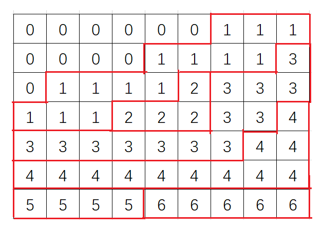
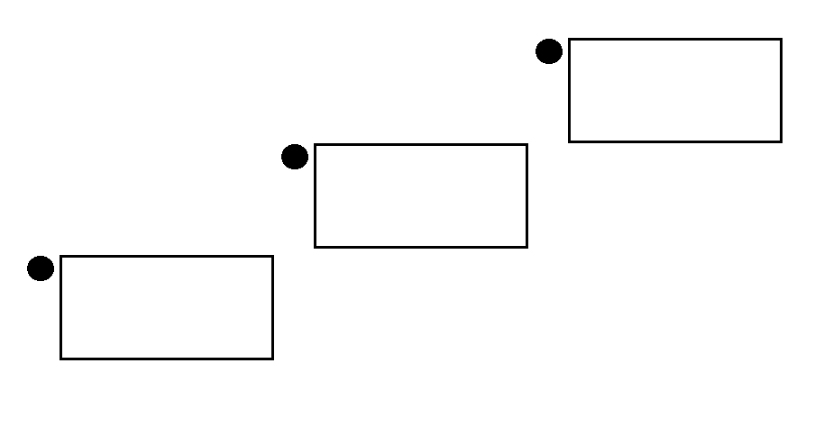

2024 7 月杂题 下
发现题目过于多了干脆分个上下吧。
P9382 [THUPC 2023 决赛] Freshman Dream
题意
-
给定 $n\times n$ 的 $01$ 矩阵 $A$，构造矩阵 $B$，满足 $(A\times B){i,j}=A{i,j}\times B_{i,j}$，在 $\bmod 2$ 的意义下。且 $B$ 中恰有 $k$ 个 $1$。
-
$n=100$（除去样例），$0\le k\le n^2$
题解
容易想到解方程。首先显然将 $B$ 视为若干个独立的列向量是正确的（根据定义），那么考虑用 $A$ 和一个列向量 $b$（$B$ 的第 $k$ 列）列方程： $$ \begin{cases} A_{1,1}b_{1}+A_{1,2}b_{2}+\cdots+A_{1,n}b_n=A_{1,k}b_1\\ A_{2,1}b_{1}+A_{2,2}b_{2}+\cdots+A_{2,n}b_n=A_{2,k}b_1\\ \vdots\\ A_{n,1}b_{1}+A_{n,2}b_{2}+\cdots+A_{n,n}b_n=A_{n,k}b_1 \end{cases} $$ 移项，将系数写成增广矩阵，可以得到： $$ \begin{bmatrix} A_{1,1}-A_{1,k}&A_{1,2}&\cdots &A_{1,n} &0\\ A_{2,1}&A_{2,2}-A_{2,k}&\cdots &A_{2,n} &0\\ \vdots &\vdots &\ddots &\vdots &\vdots\\ A_{n,1}&A_{n,2}&\cdots &A_{n,n}-A_{n,k} &0\\ \end{bmatrix} $$ 因为右边都是 $0$，所以高斯-约旦消元对它不会产生任何影响，不妨直接不看它，进行高斯-约旦消元。就能得到一个上三角矩阵。
由于 $a$ 是随机的，这样的矩阵自由元很少，那么每一列 $b_i$ 的自由元很少，就可以直接暴力枚举自由元，然后用背包来解决 $k$ 个 $1$ 的问题。瓶颈在于高斯消元，复杂度 $O(\frac{n^4}{\omega})$。
QOJ#1427 Flip
题意
- 有 $2n$ 个人，要将其分成 $A,B$ 两组各 $n$ 人。分组方式为从前往后，若两组都没满则独立均匀随机进入其中任意一组，否则进入非满的那组。
- 有 $q$ 次询问，询问之间互相独立，每次给定 $k$ 个人 $b_1,b_2\dots b_k$ 问它们被分进同一组的概率，答案对 $998244353$ 取模。
- $2\le n\le 10^5,1\le q\le 10^5,\sum k\le 2\times 10^5$
题解
考虑刻画一下这个分组的过程。
显然能找到一个 $p$ 使得第 $p$ 个人恰好把某一组填满。容易发现 $p$ 之前的所有人都是随机进入某一组的。那么每种情况出现的概率就是 $2^{-p}$。
对于单组询问，考虑直接暴力枚举这个 $p$，不妨设所有人分在 $A$ 组，分类讨论：
- $p=b_k$：那么显然 $p$ 要分到 $A$ 组，合法的情况数是 $\binom{b_k-k}{n-k}$，即把剩下的塞到 $A$ 组空位里。
- $p$ 在 $B$ 组：那么不妨将 $b$ 分为 $p$ 前和 $p$ 后两部分，即设 $b_i<p<b_{i+1}$，那么分组方案数是 $\binom{p-i-1}{n-1}$，即把剩下的塞到 $B$ 组空位里。为什么不往 $A$ 里塞呢？因为这样组合数必定形如 $\binom{T}{n-1}$，并且 $T$ 是 $k$ 段区间，可以预处理前缀和来算，注意考虑 $b_k<p$ 的部分。
- $p\ne b_k$ 且 $p$ 在 $A$ 组：那么显然 $p$ 必须大于 $b_k$，不然后面的就不得不分到 $B$ 组去。那么分组方案数是 $\binom{p-k-1}{n-k-1}$，即将 $p$ 之前的塞到 $A$ 里（不用 $B$ 的空位计算也是同理）。由于 $\sum k\le 2\times 10^5$，所以不同的 $k$ 至多有 $\sqrt{K}$ 种（这里 $K$ 表示 $\sum k$），对于每种 $k$ 可以 $O(n)$ 地枚举 $p$ 计算。
总复杂度 $O(n\sqrt{K}+K)$。
CF917D Stranger Trees
题意
- 给定一张 $n$ 个点的完全图及其中一个生成树，对于 $i\in[0,n-1]$，求出这张图有多少棵生成树和给定生成树恰有 $i$ 条边重合。
- $2\le n \le 100$，答案对 $10^9+7$ 取模。
题解
生成树计数易想到矩阵树定理。那么考虑如何区分给定边和其余边。
考虑矩阵树定理的一个不常用的引理：若对出度矩阵减去边权矩阵得到的 $L'$ 求类似于矩阵树定理的东西，得到的是所有生成树边权之积的和。证明和矩阵树定理类似。
那么对多项式比较敏感的同学就能想到给给定边赋权值 $x$，其余边赋权值 $1$，容易发现 $L'$ 行列式应是一个多项式，且它的 $i$ 次项系数就是对 $i$ 的答案。
但是直接暴力或者 NTT（真的有人愿意写任意模数 NTT 吗？）复杂度是 $O(n^5)$ 或 $O(n^4\log n)$ 的，显然就不太能过。
这时候有个处理套路：由于矩阵中最高次项为 $1$ 次项，所以最终求出来的多项式最高次项至多为 $n$（这道题因为主对角线都是常数项其实最高次至多为 $n-1$）。那么就可以用 $n$ 个点值来表示这个多项式。于是对 $n$ 个点值（比如取 $x=1\sim n$）分别做矩阵树定理，然后拉插或者高斯消元求出每一项的系数。瓶颈在于做 $n$ 次矩阵树定理，复杂度 $O(n^4)$。
QOJ#2568 Mountains
题意
- 求有多少大小为 $n\times m$，所有元素均为非负整数的矩阵使得其从左上角走到右下角，只能向下或向右走的所有路径元素和均不超过 $k$
- $1\le n,m,k\le 100$，答案对 $10^9+7$ 取模。
题解
科技题。但是问题的转化还挺妙的。
首先假如矩阵是确定的，要求权值最大的路径，有一个显然的 DP，即每次从上方和左方取较大值转移。
容易发现我们获得了这个 DP 数组就能还原出唯一的原矩阵，那么把问题转化为求这种 DP 数组的数量。为什么要这样转化呢？容易发现这个 DP 数组有非常好的性质：从上到下，从左到右依次递增。
那么容易发现可以画出若干条从左下到右上（只往右或往上）的折线 $L_i$，使得 $L_i$ 上方的数均小于等于 $i$，且 $L_i$ 与 $L_{i-1}$ 之间的数恰好等于 $i$，如图：

这是一种可能的情况。显然在这道题中我们需要画 $0\sim k-1$ 共 $k$ 条折线。
处理这种东西有一个套路：将整个网格图复制 $k$ 份，第 $i$ 份相比上一份向右下移动一格，将第 $i$ 个网格的左下和右上作为 $L_i$ 的起点和终点，这样就转化成了“$k$ 个起点，连向各自的终点，要求点不相交，求方案数”的问题了。可以套用 LGV 引理。
复杂度 $O(k^3)$，瓶颈在于求行列式，因为任意两起点和终点的路径数可以直接组合数计算。
QOJ#3082 Ascending Matrix
题意
- 求出有多少 $n\times m$ 的正整数矩阵，满足每行和每列分别递增，每个数都小于等于 $k$，且 $a_{R,C}=V$。
- $1\le n,m,\le 200,1\le k\le 100$。
题解
和上一道题长得很像，但是多了个 $a_{R,C}=V$ 的限制。
一个错误的想法是对于 $i<V$ 只统计经过 $(R,C)$ 上方的路径，对于 $i\ge V$ 只统计经过 $(R,C)$ 下方的路径，然后套用 LGV 引理。但是考虑 LGV 引理的证明过程这样显然是错的。事实上，LGV 引理中所有的“路径条数”应是在同一张图上算出的。
那么怎么办呢？注意到一个方案合法当切仅当 $(R,C)$ 上方恰好有 $V-1$ 条折线。这又让我们想到用多项式区分经过上方的折线和经过下方的折线。
那么对于每一对起点和终点，对于经过其上方的路径赋值 $x$，经过其下方的路径赋值 $1$，这样最终答案中的 $V_{i-1}$ 次项即为答案。预处理这个矩阵的复杂度是 $O(k^2(n+m))$。注意对于每一对起点终点，$(R,C)$ 的坐标是不同的。
然后又是多项式矩阵的行列式，和之前的处理方法类似，复杂度 $O(k^4)$。
P8329 [ZJOI2022] 树
题意
- 给定 $N$，对于所有 $2\le n\le N$，求出满足以下条件的树对 $(T_1,T_2)$ 的个数：
- $T_1$ 的根为 $1$，其余所有结点均有父亲结点编号小于自己。
- $T_2$ 的根为 $n$，其余所有节点均有父亲结点编号大于自己。
- 不存在某个结点 $i$ 在两棵树中均为叶子结点或均为非叶子结点，叶子节点的定义为没有儿子的结点。
- $2\le n\le 500$，答案对给定模数 $M$ 取模，$10\le M\le 2^{30}$。
题解
首先假如我们钦定一个非叶子集合，这意味着不在这个集合内的点不能有儿子。那么以 $T_1$ 为例，此时方案数就是 $\prod cnt_i$，其中 $cnt_i$ 是 $i$ 前方钦定是非叶子的点数（从这里就能看出为什么不钦定“叶子集合”了，因为这样方案数的式子会和 $i$ 有关，倒过来则是和 $n$ 有关，就不能一次求完 $2\sim N$ 的答案了 了）。但这个显然会算重，那么容易想到容斥，若设 $f(S)$ 表示 $T_1$ 中叶子结点集合恰好是 $S$ 的方案数，$F(S)$ 表示钦定非叶子集合是 $S$ 的方案数（就是上面那个玩意），显然 $F(S)=\sum_{S'\subseteq S}f(S')$，根据子集反演，有 $f(S)=\sum_{S'\subseteq S}(-1)^{|S|-|S'|}F(S')$。
设 $g(S),G(S)$ 是对 $T_2$ 的类似的东西，用 $N$ 代表全集，那么答案就是： $$ \begin{aligned} \sum_{S\cap T=\varnothing,S\cup T=N}f(S)g(T)&=\sum_{S\cap T=\varnothing,S\cup T=N}\left(\sum_{S'\subseteq S}(-1)^{|S|-|S'|}F(S')\right)\left(\sum_{T'\subseteq T}(-1)^{|T|-|T'|}G(T')\right)\\ &=\sum_{S\cap T=\varnothing,S\cup T=N}\sum_{S'\subseteq S,T'\subseteq T}F(S')G(T')(-1)^{|S|-|S'|+|T|-|T'|}\\ &=\sum_{S'\cap T'=\varnothing}F(S')G(T')(-1)^{n-|S'|-|T'|}2^{n-|S'|-|T'|}\\ &=\sum_{S'\cap T'=\varnothing}F(S')G(T')(-2)^{n-|S'|-|T'|} \end{aligned} $$ 其中倒数第二步 $2^{n-|S'|+|T'|}$ 是因为 $N\setminus (S'\cap T')$ 中每个点都可能属于 $S$ 或 $T$。
那么容易想到 DP（一般容斥题不太能暴力的都应该想 DP 吧），从前往后确定每个点 $i$ 是否属于 $S'$ 或 $T'$，由于 $S'$ 的贡献和 $|S'\cap[1,i-1]|$ 有关，$T'$ 的贡献和 $|T'\cap [i+1,n]|$ 有关，那么设状态 $dp_{i,x,y}$ 表示考虑前 $i$ 个数，$|S'\cap[1,i]|=x,|T'\cap [i+1,n]|=y$ 时，对上面那个式子的贡献。转移分四种：
- $i\in S',i\notin T'$：$dp_{i,x,y}\gets dp_{i-1,x-1,y}\times (x-1)\times y$。
- $i\notin S',i\in T'$：$dp_{i,x,y}\gets dp_{i-1,x,y+1}\times x\times y$。
- $i\in S',i\in T'$：不产生贡献，因为限制 $S'\cap T'=\varnothing$，这种情况显然就不符合条件。
- $i\notin S',i\notin T'$：$dp_{i,x,y}\gets -2\times dp_{i-1,x,y}\times x\times y$。
初始状态是 $\forall i\in[1,n-1],dp_{1,1,i}=i$，注意第一个点必定在 $T_2$ 是叶子，因为它在 $T_1$ 是非叶子。最终统计 $\sum_{i=1}^{n-1}dp_{n-1,i,1}\times i$，同理点 $n$ 在 $T_1$ 也必定是叶子。
转移 $O(1)$，状态数 $O(N^3)$，统计答案总复杂度 $O(N^2)$，复杂度 $O(N^3)$。
参考代码
#include<bits/stdc++.h>
#define forup(i,s,e) for(int i=(s),E123=(e);i<=E123;++i)
#define fordown(i,s,e) for(int i=(s),E123=(e);i>=E123;--i)
#define mem(a,b) memset(a,b,sizeof(a))
#ifdef DEBUG
#define msg(args...) fprintf(stderr,args)
#else
#define msg(...) void()
#endif
using namespace std;
using i64=long long;
using pii=pair<int,int>;
#define fi first
#define se second
#define mkp make_pair
#define gc getchar()
int read(){
int x=0,f=1;char c;
while(!isdigit(c=gc)) if(c=='-') f=-1;
while(isdigit(c)){x=(x<<1)+(x<<3)+(c^48);c=gc;}
return x*f;
}
#undef gc
const int N=505;
int n,mod;
int dp[N][N][N];
signed main(){
n=read();mod=read();
forup(i,1,n-1){
dp[1][1][i]=i;
}
forup(i,2,n){
forup(x,1,i){
forup(y,1,n-i){
(dp[i][x][y]+=1ll*dp[i-1][x-1][y]*(x-1)%mod*y%mod)%=mod;
(dp[i][x][y]+=1ll*dp[i-1][x][y+1]*x%mod*y%mod)%=mod;
(dp[i][x][y]+=1ll*(mod-2)*dp[i-1][x][y]%mod*x%mod*y%mod)%=mod;
}
}
}
forup(k,2,n){
int ans=0;
forup(i,1,k-1){
(ans+=1ll*dp[k-1][i][1]*i%mod)%=mod;
}
printf("%d\n",ans);
}
}
P8340 [AHOI2022] 山河重整
题意
- 给定 $N$，求 $S\subseteq [1,N]$ 的 $S$ 数量，使得对于 $k\in[1,N]$，$S$ 存在总和恰好为 $k$ 的子集。
- $1\le N\le 5\times 10^5$，答案对 $M$ 取模，$2\le M\le 1.01\times 10^9$。
题解
感觉这道题思路好怪啊，不知道为什么往这个方向想就能做了。
有一个显然的 DP，设 $dp_{i,j}$ 表示考虑 $S\subseteq [1,i]$，能拼出 $[1,j]$ 的方案数。每次转移就考虑 $i+1$ 是否加入集合，然后之前拼出的每个数都能加上 $i+1$。那么若 $i\le j+1$ 就能从 $f_{i,j}$ 转移到 $f_{i+1,j+i+1}$。
考虑为什么在转移的过程中我们需要 $i\le j+1$，容易发现若 $i>j+1$ 则 $S$ 能拼出的数就会出现一段空格 $[j+1,i-1]$，这显然是不能用大于 $i+1$ 的数填满的。又容易想到，根据我们的转移，在 $dp_{i,j} $中 $S$ 能拼出的区间应恰好是 $[1,j]$（不能拼出任何大于 $j$ 的数），那么显然有 $j=\sum_{a\in S} a$。于是这个限制就转化成了“$S$ 中 $\le i+1$ 的数总和 $\ge i+1$”。那么我们不妨考虑计算不合法的方案数。那么一个方案不合法当且仅当存在 $k\in [1,s]$ ，使得 $S$ 中 $\le k$ 的数总和 $< k$。那么容易想到每个非法方案都存在一个最小的 $k$，于是考虑如何在某个非法方案最小的 $k$ 处计算到它。
由于 $k$ 之前的位置都合法，但 $k$ 不合法，那么 $S$ 中小于 $k$ 部分的总和应恰好是 $k-1$。那么我们其实只需要计算 $f_i$ 表示小于 $i$ 的数能拼出 $[1,i]$，且总和恰为 $i$ 的方案数，容易发现答案即为 $2^n-\sum f_i\times 2^{n-i-1}$，因为前面的合法，$i+1$ 不选，后面的任意选即可拼出一个非法方案。
由于我们能算出在某点非法的方案数，容易想到用容斥进行转移来计算 $f$。设 $g_i$ 表示选若干个小于等于 $i$ 的数总和恰为 $i$ 的方案数，显然 $f_i=g_i-\sum_{j=0}^{i-1}f_j\times w(j,i)$，其中 $w(j,i)$ 表示选 $[j+2,i]$ 中的数和为 $i-j$ 的方案数。
那么考虑如何计算 $g$ 和 $w$。对于 $g$ 的计算，有一个 $O(n\sqrt n)$ 的 DP。容易发现任意一个拼出 $n$ 的选数方案至多只有 $O(\sqrt{n})$ 个数，证明略。那么我们不妨把某个选数方案 $s_1,s_2\dots s_t$ 看作 $t$ 列方格，每一列对应一个 $s_i$，总格数就是 $n$。
把行列互换，这个问题就转化成了完全背包：$m=O(\sqrt{n})$ 种物品，每种物品任意个，第 $i$ 种物品体积为 $i$，求恰好塞满大小为 $n$ 的背包的方案数。但是容易发现若选了大小为 $i+1,i-1$ 的物品但没选大小为 $i$ 的物品，那么这个方案转化回原问题就会出现两个一样的数，这个从大到小每次强制钦定能选当前物品的状态至少选一个当前物品即可。这样若某方案包含物品 $i$，那么 $[1,i-1]$ 的物品都会至少包含一个了。在处理完 $i'>i$ 后，容易发现 $i$ 会新增初始状态 $g_i=1$。
然后考虑 $w$ 怎么处理。容易想到和算 $g$ 类似的思路，但是怎么搞都不太好搞啊。题解给出的做法是将转移视为 $f_i=g_i-\sum f_j\times w(j,i)=g_i-h_i$，然后计算 $h$。容易发现一个 $h_p$ 就是在 $f_j$ 的基础上再选若干个大于等于 $j+2$ 的数。那么其实可以和 $g$ 类似地做，区别在于枚举 $i$ 后的初始状态不是 $g_i=1$ 而是 $h_{j+(j+2)i}=f_j$。
容易发现，想要求出 $h_i$，我们需要先求出若干 $f_{i'}$，显然 $i'<\frac{i}{2}$，那么可以倍增每次算出一段的 $h$ 和 $f$。复杂度 $T(n)=T(\frac{n}{2})+O(n\sqrt{n})=O(n\sqrt{n})$。
LOJ#3627 这是一道集训队胡策题
题意
- 给定 $n\times n$ 的 $01$ 矩阵 $c$，求有多少长度为 $n$ 的 $01$ 序列 $a_i,b_i$，满足 $\forall 1\le i,j\le n,c_{i,j}=a_i\lor c_{i,j}=b_j$。
- $1\le n\le 5000$，答案对 $998244353$ 取模。
题解
题解的注意力非常集中。我真希望我的注意力也这么集中。我看到这道题第一反应是 2-sat，然后成功转化成了一个我不会做的问题。
注意到 $\sum_{i,j}([a_i=c_{i,j}]+[b_j=c_{i,j}]-[a_i=b_j])\le n^2$，且取等当且仅当 $a,b$ 合法。分类讨论即可，容易发现它在前两项满足至少一个时会产生 $1$ 的贡献，否则为 $0$。
设 $A=\sum a_i,B=\sum b_i$，则 $\sum_{i,j}[a_i=b_i]=AB+(n-A)(n-B)$。那么在确定 $A,B$ 之后只需要最大化前面那两玩意即的和可，这个有个很简单的贪心。把每一行/列按 $1$ 的个数排序就能 $O(1)$ 计算了，因为行列独立显然正确。对于计数，若有多个和第 $A$ 行/第 $B$ 列相同的行/列计算组合数即可。
于是暴力枚举 $A,B$ 即可 $O(n^2)$ 完成。
参考代码
#include<bits/stdc++.h>
#define forup(i,s,e) for(int i=(s),E123=(e);i<=E123;++i)
#define fordown(i,s,e) for(int i=(s),E123=(e);i>=E123;--i)
#define mem(a,b) memset(a,b,sizeof(a))
#ifdef DEBUG
#define msg(args...) fprintf(stderr,args)
#else
#define msg(...) void()
#endif
using namespace std;
using i64=long long;
using pii=pair<int,int>;
#define fi first
#define se second
#define mkp make_pair
#define gc getchar()
int read(){
int x=0,f=1;char c;
while(!isdigit(c=gc)) if(c=='-') f=-1;
while(isdigit(c)){x=(x<<1)+(x<<3)+(c^48);c=gc;}
return x*f;
}
#undef gc
const int N=5005,inf=0x3f3f3f3f,mod=998244353;
int n,cntx[N],cnty[N],Lcx[N],Rcx[N],Lcy[N],Rcy[N];
int binom[N][N];
char str[N];
bool chk(int X,int Y){
return cntx[X]+cnty[Y]+((n-X)*n-(cntx[n]-cntx[X]))+((n-Y)*n-(cnty[n]-cnty[Y]))-X*Y-(n-X)*(n-Y)==n*n;
}
int calc(int X,int Y){
int lx=Lcx[X],rx=Rcx[X];
int ly=Lcy[Y],ry=Rcy[Y];
return 1ll*binom[rx-lx+1][X-lx+1]*binom[ry-ly+1][Y-ly+1]%mod;
}
signed main(){
n=read();
forup(i,0,n){
binom[i][0]=1;
forup(j,1,i){
binom[i][j]=(binom[i-1][j]+binom[i-1][j-1])%mod;
}
}
forup(i,1,n){
scanf(" %s",str+1);
forup(j,1,n){
if(str[j]=='1'){
++cntx[i];
++cnty[j];
}
}
}
sort(cntx+1,cntx+n+1,greater<int>());
sort(cnty+1,cnty+n+1,greater<int>());
forup(i,1,n){
if(i==1||cntx[i]!=cntx[i-1]){
Lcx[i]=i;
}else{
Lcx[i]=Lcx[i-1];
}
if(i==1||cnty[i]!=cnty[i-1]){
Lcy[i]=i;
}else{
Lcy[i]=Lcy[i-1];
}
}
fordown(i,n,1){
if(i==n||cntx[i]!=cntx[i+1]){
Rcx[i]=i;
}else{
Rcx[i]=Rcx[i+1];
}
if(i==n||cnty[i]!=cnty[i+1]){
Rcy[i]=i;
}else{
Rcy[i]=Rcy[i+1];
}
}
forup(i,1,n){
cntx[i]+=cntx[i-1];
cnty[i]+=cnty[i-1];
}
int ans=0;
forup(X,0,n){
forup(Y,0,n){
if(chk(X,Y)){
(ans+=calc(X,Y))%=mod;
}
}
}
printf("%d\n",ans);
}
CF1730F Almost Sorted
题意
- 给定一个长度为 $n$ 的排列 $p$ 以及一个常数 $k$。
- 构造一个排列 $q$，使得 $\forall 1\le i<j\le n$，满足 $p_{q_i}\le p_{q_j}+k$。
- 最小化 $q$ 中的逆序对数。输出这个逆序对数。
- $1\le n\le 5000,1\le k\le 8$.
题解
这个 $p_{q_i}$ 很不符合直觉啊，不妨令 $h_i=p_{q_i}$，容易发现每个排列 $h_i$ 都能唯一对应一组 $q_i$，考虑构造 $h_i$。
容易想到 DP，难点在于很难概括一个状态。
首先一个观察是这个限制是十分强的。某个数 $t$ 后面不能出现 $< t-k$ 的数，也就是说这些数都得出现在 $t$ 前面。那么 $h$ 的任意一个前缀所包含的数字集合必定形如 $[1,j]\cup S$，其中 $\max S-j\le k$（或者 $S$ 为空之类的边界情况）。然后你就会惊奇地发现某个前缀的状态能被二元组 $(j,S)$ 表示出来。其中 $j$ 是一个整数，$S$ 是一个大小不大于 $k$ 的集合（可以用 $k$ 位二进制数表示）。为了保证一个状态只会被表示一次，钦定 $j+1\notin S$ 即可。
于是设 $f_{i,j,S}$ 表示考虑 $h_1\sim h_i$，填满这个前缀的数字集合是 $(j,S)$，$q$ 在这个前缀最小的逆序对数是多少。显然可以用 $j$ 和 $S$ 算出 $i$ 所以状态只有 $n2^k$ 种（并且也不需要记 $i$）。每次转移就枚举 $h_{i+1}$（这只有 $O(k)$ 种），考虑如何计算 $q_{i+1}$ 会和 $(j,S)$ 产生多少逆序对。
我们可以先预处理每个 $q_i$ 会和每个前缀 $[1,j]$ 产生的逆序对数量，有简单的 $O(n^2)$ 暴力，每次暴力维护后缀和即可。对于 $S$，由于它里面至多只有 $k$ 个数，那么其实可以每次转移时 $O(k)$ 暴力。于是复杂度就是 $O(n^2+nk^22^k)$，已经能过了。如果有闲心的话可以预处理每个 $S$ 和 $q_{i}$ 产生的逆序对数来压掉一个 $k$。
P6647 [CCC2019] Tourism
题意
- 给定 $n,k$ 和一个序列 $a$，求把序列 $a$ 分成 $\left\lceil\frac{n}{k}\right\rceil$ 段，每段长度不大于 $k$，每段的最大值之和最大是多少。
- $1\le k\le n\le 10^6,1\le a_i\le 10^9$
题解
这种把序列分成 $t$ 段，每段长度不超过 $k$，每一段有什么什么贡献，计算贡献和最值的题感觉好常见啊。
首先有一个最最暴力的 DP，设 $f_{i,j}$ 表示考虑 $[1,i]$ 的数，分成 $j$ 段贡献的最大值是多少。暴力转移是 $O(nk^2)$ 的，但是能用一些数据结构优化成 $O(nk\log n)$ 之类的东西。
一个观察是对于任意一个合法的分段策略（指分成 $\left\lceil\frac{n}{k}\right\rceil$ 段），其中任取 $t$ 个连续的完整段，总长为 $l$，那么必定 $t=\left\lceil\frac{l}{k}\right\rceil$（意思是不可能 $t>$ 最少分段数），否则可以在不影响其余段的情况下在这一部分减少一段，那么原分段策略就没有把序列分成 $\left\lceil\frac{n}{k}\right\rceil$ 段。
于是这个 $j$ 就不用记了。重新记 $f_i$ 表示将 $[1,i]$ 分成 $\left\lceil\frac{i}{k}\right\rceil$ 段的方案数。称这个段数为状态的“层数”，那么任意一个 $f_i$ 只能从上一层转移过来，暴力转移是 $O(nk)$ 的。一个显然的想法是用线段树和单调栈优化成 $O(n\log n)$，但其实还有更牛的做法可以做到 $O(n)$，我们观察一下转移方程： $$ f_i=\max_{j=i-k}^{k\times(\left\lceil\frac{i}{k}\right\rceil-1)}\begin{Bmatrix}f_j+\max_{l\in [j+1,i]}a_l\end{Bmatrix} $$
根据经验，显然把 $l\in [j+1,i]$ 拆成 $l\in [j+1,k\times(\left\lceil\frac{i}{k}\right\rceil-1)]$ 和 $l\in[k\times(\left\lceil\frac{i}{k}\right\rceil-1)+1,i]$ 两部分是更好做的。下文令 $L=k\times(\left\lceil\frac{i}{k}\right\rceil-1)$： $$ \begin{aligned} f_i&=\max_{j=i-k}^{L}\begin{Bmatrix}f_j+\max_{l\in [j+1,i]}a_l\end{Bmatrix}\\ &=\max_{j=i-k}^{L}\begin{Bmatrix}f_j+\max\left(\max_{l\in [j+1,L]}a_l,\max_{l\in[L+1,i]}a_l\right)\end{Bmatrix}\\ &=\max_{j=i-k}^{L}\begin{Bmatrix}\max\left(f_j+\max_{l\in [j+1,L]}a_l,f_j+\max_{l\in[L+1,i]}a_l\right)\end{Bmatrix}\\ &=\max\left(\max_{j=i-k}^{L}\begin{Bmatrix}f_j+\max_{l\in [j+1,L]}a_l\end{Bmatrix},\max_{j=i-k}^{L}\begin{Bmatrix}f_j\end{Bmatrix}+\max_{l\in[L+1,i]}a_l\right)\\ \end{aligned} $$ 那么分别维护那两坨大括号的 $\max$ 就行了，用栈维护可以做到均摊 $O(1)$。
[ARC117E] Zero-Sum Ranges 2
题意
- 给定 $n,k$，求有多少个长度为 $2n$，由 $n$ 个 $-1$，$n$ 个 $1$ 组成的序列中有且仅有有 $k$ 个区间总和为 $0$。
- $1\le n\le 30,1\le k\le n^2$。
题解
这玩意长得就很像括号序列，那么考虑先把它的前缀和 $s_i$ 搞出来。那么假如把 $(i,s_i)$ 点在一个平面直角坐标系上，容易发现总和为 $0$ 的区间数量和每一行的点数挂钩，这就让我们想到对 $s$ 值域的每一行 DP（感觉算是套路吧，已经至少第三次看到类似东西了）。
设 $f_{i,c,l,v}$ 表示考虑值域 $[i,n]$，已经有 $c$ 段的 $s_i$ 被确定了，总长度为 $l$，且产生了 $v$ 个总和为 $0$ 的区间的方案数。考虑每次 $i+1\to i$ 的过程，那么每一段的左右都会连上一个 $i$（考虑相邻的 $s$ 只相差 $1$），或者产生新的段，或者两段合并。第一种情况中，每个状态只会转移到单个状态，对于第二三种，需要枚举“新增了多少段”或者“有多少段发生了合并”，再乘上一个组合数的转移系数。
容易发现不好维护“恰好有 $n$ 个 $1$ 与 $n$ 个 $-1$”。一个想法是将正负拆开来，显然负数和正数完全相同（真的一点区别都没有，因为转移与 $i$ 无关，而负数只是将 $i$ 取相反数）。然后枚举正数的段数 $c$ 与总长 $l$，产生的总和为 $0$ 的区间数 $v$，那么状态 $f_{0,c,l,v}$ 就能和 $f_{-1,c-1,n-l,k-v},f_{-1,c,n-l,k-v}$ 这两个状态合并。为什么不与 $c'=c+1$ 合并呢？容易发现任意一个方案 $p$ 都有全部取反的方案 $p'$，那么将 $f_{0,c,\ast,\ast}$ 和 $f_{-1,c-1,\ast,\ast}$ 合并就把负数区间依次插在正数的中间，将 $f_{0,c,\ast,\ast},f_{-1,c,\ast,\ast}$ 合并就把负数区间依次插在正数的前面。容易发现这样就不会将任意一对 $p,p'$ 都算到，且任意一对都恰好算了一次，再乘以二即可。
于是状态数 $O(n^4)$，转移 $O(n)$，复杂度 $O(n^5)$。
CF1789F Serval and Brain Power
题意
- 给定字符串 $S$，求它最长的子序列 $T$ 满足存在 $T'$ 使得 $T=T'+T'+\dots +T'$，这里的 $+$ 表示字符串的连接，且 $T'$ 至少重复两遍，输出 $T$ 的长度。
- $|S|\le 80$。
题解
设 $T$ 中 $T'$ 重复了 $k$ 遍，那么考虑对于不同的 $k$ 如何做。
对于 $k$ 是偶数的情况，不妨设 $k=2$，那么枚举第一个 $T'$ 的结尾，求前半部分和后半部分的 LCS 即可，复杂度 $O(n^3)$。
对于 $k$ 是奇数的情况，$k=3$ 可以沿用上述做法，是 $O(n^5)$ 带小常数（大约是 $\frac{1}{27}$）的，还是比较能过。但是 $k=5$ 就不太行了。
一个直觉是当 $k$ 比较大时，$T'$ 的长度是不长的。有一个很厉害的观察是，对于任意一个 $T'$，若将序列任意分成 $k$ 份，那么至少一份包含了完整的 $T'$。考虑反证法，若不存在某一份包含完整 $T'$ 那么所有 $T'$ 都横跨分界点，显然分界点只有 $k-1$ 个，则 $T'$ 只有 $k-1$ 个，与 $T'$ 有 $k$ 个矛盾。
显然均分成 $k$ 份不劣，那么枚举 $k$ 后可以 $O(nk2^{\frac{n}{k}})$ 贪心，在 $k\ge 5$ 时都是很优秀的。
CF1781F Bracket Insertion
题意
- 给定 $n,q$，初始有一个空序列，进行以下操作 $n$ 次：
- 等概率随机选择一个空位（若当前序列中有 $k$ 个字符，那么有 $k+1$ 个空位）。
- 在 $[1,10000]$ 中等概率随机一个数 $x$，若 $x\le q$ 则在该位置插入
()，否则插入)(。 - 求出最终得到一个合法括号序列的概率。
- $1\le n\le 500,0\le q\le 10^4$。
题解
首先想到 DP。但是按题意每次插入一个是非常不好做的。不妨进行一些问题的转化，将每次插入的两个括号视为一种颜色，对带颜色，合法的括号序列进行计数。容易发现我们要维护两个东西：任意两种颜色间不相交（考虑生成过程，显然后加入的括号要么被先加入的包含，要么不交），以及括号序列的合法性。
因为后者是很经典的，我们可以把左括号当成 $+1$，右括号当成 $-1$，维护前缀和的最小值是否恰好为 $0$，于是考虑设 $f_{i,j}$ 表示长度为 $2i$ 的序列，前缀和的最小值为 $j$ 的方案数。考虑在转移的过程中维护前者的合法性。
那么转移有两种，一种是用一对同色括号将某序列包起来，另一种是将两序列连接起来。注意到后者会算重，一个想法是将合并（$s+t$）改为 $s+a+t+a'$，其中 $a,a'$ 是一对同色括号，这样每种情况就只会在最后一段的开头被统计到了。那么其实第一种可以并入第二种，考虑如何转移。
首先枚举 $s$ 中有 $k\in [0,i-1]$ 括号，然后枚举新加的这一对括号是 () 还是 )(。容易发现 $j$ 可能在 $s$ 中取到，则从 $f_{k,j}$ 中转移，否则在 $t$ 中取到，从 $f_{i-k-1,j\pm 1}$ 中转移，此时另一边可以取不破坏“最小值为 $j$”性质的任意数（这个可以预处理前缀和），注意防止算重。
另外一个很重要的点是，虽然 $s$ 和 $a+t+a'$ 都对应了唯一的操作序列，但是两者的操作序列是独立的。即操作序列不能简单相加，而应归并起来。归并的方案数是一个组合数，所以转移时还应额外乘一个组合数。
状态数 $O(n^2)$，转移 $O(n)$，复杂度 $O(n^3)$。
QOJ#1251 Even rain
题意
- 给定一长度为 $n$ 的序列 $a_n$ 和一个数 $k$，你需要将 $k$ 个 $a_i$ 赋值为 $0$。求 $\sum_{i=1}^n\min(pre_i,suf_i)-i$ 为偶数的方案数。其中 $pre_i,suf_i$ 分别是 $i$ 的前后缀最大值。
- $1\le n\le 2.5\times 10^5,0\le k\le 25,1\le a_i\le 10^9$，这是转化后的题意。
题解
题意转化到这一步是简单的，为什么要这样转化呢？因为 $n\le 2.5\times 10^5$，那么显然应该考虑如何将每个数的贡献独立开来。
贡献中又有前缀，又有后缀是不好做的。一个想法是找到删除后序列的最大值，那么它前方的贡献权都取前缀，后方的贡献全都取后缀，就略微好做一点了。
设 $f_{i,j,l,0/1}$ 表示考虑前 $i$ 个数，删除了 $j$ 个，前缀最大值为 $a_l$，总和为偶数/奇数的方案数。由于只删 $k$ 个，那么 $l$ 的取值只有 $k$ 种（删掉前 $i$ 大即得到第 $i$ 种取值），所以状态数是 $O(nk^2)$ 的。
转移是简单的，枚举下一个数是否删掉即可。
同理对后缀定义 $g_{i,j,l,0/1}$，那么统计答案就把 $f_{i,j,i,0/1}$ 和 $g_{i,k-j,i,1/0}$ 合并起来即可。有一些边界情况，比如两 $a_i$ 相同，此时可以钦定左侧的更大之类的来处理。
转移 $O(1)$，复杂度 $O(nk^2)$。
CF1119F Niyaz and Small Degrees
题意
- 给定一棵 $N$ 个点的树，边带权，对于 $0\le x\le n-1$，你需要删掉一些边使得每个点的度数都小于等于 $x$，对于每个 $x$，求出删掉的边权和最小值。
- $2\le n\le 2.5\times 10^5$
题解
首先考虑单组询问，设 $d_u$ 为 $u$ 的度数。
考虑树的性质，那么容易想到树形 DP。设 $f_{u,0/1}$ 表示考虑 $u$ 及其子树，$u$ 与其父亲的连边是否断掉，所删边权值和的最小值。这里 $f_{u,1}$ 的值包含其与父亲连边的边权。
那么转移是简单的，每个儿子先取 $\min(f_{v,0},f_{v,1})$，然后假如取 $f_{v,0}$ 的太多了就贪心地删掉一点。复杂度能做到 $O(N\log N)$。
注意到对于一个 $x$，称 $d_u>x$ 的 $u$ 为关键点。显然两非关键点之间的连边不可能被删掉。这启示我们只对关键点进行 DP。
由于 $d_u>x$ 的 $u$ 是关键点，那么关键点总数就是 $\sum_{x}\sum_{u}[d_u>x]=\sum_u d_u=2N-2$，是 $O(N)$ 级别的，那么假如每次对一个森林计算时复杂度只和关键点数相关，复杂度就对了。
设有 $n$ 个关键点，容易发现“对关键点进行 DP”无法简单地做到 $O(n\log n)$，因为可能删掉与非关键点的连边。但是复杂度正确需要每个点的复杂度为常数，或和关键的儿子数挂钩。前者大概可以将每个非关键儿子排序后挂到父亲处，每次二分，这个看着就不好写且容易写假。后者就有一些简单方法了。
容易发现对于点 $u$，至多删掉 $d_u-x$ 个儿子。那么我们只维护边权最小的这么多个非关键儿子，剩下的必不可能被删掉，否则显然不优。而 $d_u-x$ 随着 $x$ 的增加显然是越变越少的，那么删掉的永远也不可能加回来，故维护这个是 $O(n\log n)$ 的（因为你需要一些堆之类的东西）。我们可以先默认这些被删掉，假如删某个关键的儿子更优就加回来，这样一个结点的复杂度只和关键的儿子数挂钩，复杂度就对了，是 $O(n\log n)$ 的。
P10207 [JOI 2024 Final] 马拉松比赛 2
题意
- 有一条总长度为 $L$ 的路，道路上有 $N$ 个球，第 $i$ 个球位于 $X_i$ 处，一个人拿起一个球要花 $1$ 秒，拿着 $x$ 个球跑一米要花 $x+1$ 秒。他只有恰好和球在同一位置时才能拿起一个球。
- $Q$ 组询问，每次给定起点 $S$ 终点 $G$ 和时间限制 $T$，求从起点出发，拿起所有球到达终点所需最小时间是否 $\le T$。
- $1\le N,Q,L,T\le 5\times 10^5$。
题解
有点诈骗。
不妨认为拿起球不需要时间，将 $T$ 减去 $N$ 即可。
首先有一个显然的观察：只会在最后一次经过某个球时拿起它，否则显然不优。那么显然若多个球在同一点则必定同时拿起，所以可以合为一个球。
那么容易发现最小用时应是本质不同球数的平方级别，因为你要捡下一个球至少要走一步，时间为当前球数，于是最小情况就是等差数列求和。故若有解，$n^2$（此处 $n$ 指本质不同球数）应该和 $T$ 是一个级别的。所以我们其实可以考虑 $O(n^2)$ 左右的做法。
然后容易发现若 $X_u<X_v\le G$，那么必定先拿起 $u$ 再拿起 $v$，$G\le X_v< X_u$ 也同理。
那么没拿到的球一定是一个区间，考虑一个区间 DP，设 $f_{l,r,0/1}$ 表示没拿 $[l,r]$ 的球，现在在 $l/r$ 的最短时间，转移是比较简单的。
那么枚举最先拿的球（只可能是最左边或最右边）和最后拿的球（只可能是 $G$ 的前驱/后继）即可 $O(1)$ 求出答案。于是复杂度 $O(n^2+Q)$，$n$ 指本质不同球数。
[ARC118E] Avoid Permutations
题意
- 给定一长度为 $n$ 的数列 $a$，$a_i$ 要么在 $[1,n]$ 中，要么等于 $-1$，每个不为 $-1$ 的数只出现了至多一次。
- 将 $a$ 中 $-1$ 替换为 $[1,n]$ 中的数成为一个排列 $P$，定义 $F(P)$ 表示从 $(0,0)$ 只能向右和向上走，不能经过 $(i,P_i)$，走到 $(n+1,n+1)$ 的方案数。
- 对于所有补全方案 $P$，求 $F(P)$ 的总和。
- $1\le n\le 200$
题解
首先“网格图不能经过若干点求路径数”是经典问题，对于 $L\times L$ 的网格 $n$ 个点，有 $O(L^2)$ 的简单 DP 和 $O(n^2)$ 的容斥 DP。
那么考虑这道题要怎么做，这道题的条件其实就是每一行每一列各有一个障碍物，并且其中一些不确定，求路径数。那么设 $P$ 为新加的障碍的点集，$S$ 为某一条路径的点集。显然 $S,P$ 均未确定，答案就是求 $\sum_{S}\sum_{P}[S\cap P=\varnothing]$。容易发现可以容斥，答案变为 $\sum_{S}\sum_{P}\sum_{P'\subseteq(S\cap P)}(-1)^{|P'|}$。
考虑调换枚举顺序，容易发现网格的边长是非常小的，那么 $S$ 是比较好处理的，于是把 $S$ 放到最前面，则答案变为 $\sum_{S}\sum_{P'\subseteq S}(-1)^{|P'|}\sum_{P\supseteq P'}1$。容易发现这个 $\sum_{P\supseteq P'}1=(m-|P'|)!$，其中 $m$ 为未确定的障碍数。
那么考虑 DP 求出前面这个东西，设 $f_{i,j,k,0/1,0/1}$ 表示走到 $(i,j)$，当前钦定的 $|P'|=k$，第 $i$ 行有/无障碍（可能是原来的，也可能是新加的），第 $j$ 列有/无障碍的容斥系数之和。为什么可以只维护第 $i$ 行和第 $j$ 列有无障碍呢？因为路径只能向上或向右，那么我们已经钦定过的 $P'$ 只可能在左下角的一小块矩形中，并且以后只会往右/上走。那么 $(i',j')$ 满足 $i'<i,j'<j$ 是不可能对后面的决策产生影响的，故只需要记录 $i'=i$ 和 $j'=j$ 的情况。
转移比较简单，考虑向上/向右走，下一个点是否加入 $P'$ 即可。转移的复杂度是 $O(1)$ 的。
复杂度 $O(n^3)$。
参考代码
#include<bits/stdc++.h>
#define forup(i,s,e) for(i64 i=(s),E123=(e);i<=E123;++i)
#define fordown(i,s,e) for(i64 i=(s),E123=(e);i>=E123;--i)
#define mem(a,b) memset(a,b,sizeof(a))
#ifdef DEBUG
#define msg(args...) fprintf(stderr,args)
#else
#define msg(...) void()
#endif
using namespace std;
using i64=long long;
using pii=pair<i64,i64>;
#define fi first
#define se second
#define mkp make_pair
#define gc getchar()
i64 read(){
i64 x=0,f=1;char c;
while(!isdigit(c=gc)) if(c=='-') f=-1;
while(isdigit(c)){x=(x<<1)+(x<<3)+(c^48);c=gc;}
return x*f;
}
#undef gc
const i64 N=205,inf=0x3f3f3f3f,mod=998244353;
i64 n,m,a[N],col[N],row[N],dp[N][N][N][2][2],fact[N];
signed main(){
n=read();
a[0]=a[n+1]=-1;
forup(i,1,n){
a[i]=read();
if(~a[i]){
col[i]=1;row[a[i]]=1;
}else{
++m;
}
}
dp[0][0][0][0][0]=1;
forup(i,0,n+1){
forup(j,0,n+1){
if(i==n+1&&j==n+1) break;
forup(k,0,min(i,j)){
if(!dp[i][j][k][0][0]&&!dp[i][j][k][0][1]&&!dp[i][j][k][1][0]&&!dp[i][j][k][1][1]) continue;
if(i<=n&&a[i+1]!=j){
if(col[i+1]){
(dp[i+1][j][k][1][0]+=dp[i][j][k][0][0]+dp[i][j][k][1][0])%=mod;
(dp[i+1][j][k][1][1]+=dp[i][j][k][0][1]+dp[i][j][k][1][1])%=mod;
}else{
(dp[i+1][j][k][0][0]+=dp[i][j][k][0][0]+dp[i][j][k][1][0])%=mod;
(dp[i+1][j][k][0][1]+=dp[i][j][k][0][1]+dp[i][j][k][1][1])%=mod;
if(0<j&&j<=n&&0<i+1&&i+1<=n&&!row[j]) (dp[i+1][j][k+1][1][1]+=dp[i][j][k][0][0]+dp[i][j][k][1][0])%=mod;
}
}
if(j<=n&&a[i]!=j+1){
if(row[j+1]){
(dp[i][j+1][k][0][1]+=dp[i][j][k][0][0]+dp[i][j][k][0][1])%=mod;
(dp[i][j+1][k][1][1]+=dp[i][j][k][1][0]+dp[i][j][k][1][1])%=mod;
}else{
(dp[i][j+1][k][0][0]+=dp[i][j][k][0][0]+dp[i][j][k][0][1])%=mod;
(dp[i][j+1][k][1][0]+=dp[i][j][k][1][0]+dp[i][j][k][1][1])%=mod;
if(0<j+1&&j+1<=n&&0<i&&i<=n&&!col[i]) (dp[i][j+1][k+1][1][1]+=dp[i][j][k][0][0]+dp[i][j][k][0][1])%=mod;
}
}
}
}
}
fact[0]=1;
forup(i,1,n){
fact[i]=1ll*fact[i-1]*i%mod;
}
int res=0;
forup(i,0,m){
int p=(i&1?mod-1:1);
(res+=1ll*dp[n+1][n+1][i][0][0]*fact[m-i]%mod*p%mod)%=mod;
}
printf("%d\n",res);
}
QOJ#8049 Equal Sums
题意
- 有两个长度分别为 $n,m$ 的序列 $x_n,y_m$，对其中每个值有上下界限制（限制给定，$lx_i\le x_i\le rx_i,ly_i\le y_i\le ry_i$）。
- 对于每一对 $(a,b)$，求有多少组可能的 $x,y$（我们认为两组 $x,y$ 不同当且仅当 $x$ 的前 $a$ 位不完全相同或 $y$ 的前 $b$ 位不完全相同）满足 $\sum_{i=1}^a x_i=\sum_{j=1}^b y_j$。
- $1\le n,m,lx,rx,ly,ry\le 500$，答案对 $998244353$ 取模。
题解
背包技巧题，应该算是套路。
由于需要 $\sum x=\sum y$，一个想法是拔河背包（应该是叫这个名字吧）。
设 $f_{i,j,k}$ 表示考虑 $x$ 的前 $i$ 位，$y$ 的前 $j$ 位，$\sum x-\sum y=k$ 的方案数。首先这个直接转移会算重（比如 $x_1+y_1+x_2$ 和 $x_1+x_2+y_1$ 会被认为是两个方案），其次状态数是 $O(n^4)$，所以需要优化。
这应该算一个套路，这种 DP 可以将第三维将到 $O(V)$ 量级（此处 $V$ 为值域）。具体来说，若 $k>0$，则只转移到 $f_{i,j+1,\ast}$，若 $k\le 0$，则只转移到 $f_{i+1,j,\ast}$。这样就不重不漏，并且状态数变成 $O(n^3)$ 了。转移 $O(1)$，时间复杂度 $O(n^3)$。
因为空间会炸，所以可以滚动数组优化一下。
参考代码
#include<bits/stdc++.h>
#define forup(i,s,e) for(int i=(s),E123123123=(e);i<=E123123123;++i)
#define fordown(i,s,e) for(int i=(s),E123123123=(e);i>=E123123123;--i)
#define mem(a,b) memset(a,b,sizeof(a))
#ifdef DEBUG
#define msg(args...) fprintf(stderr,args)
#else
#define msg(...) void();
#endif
using namespace std;
using i64=long long;
using pii=pair<int,int>;
#define fi first
#define se second
#define mkp make_pair
#define gc getchar()
int read(){
int x=0,f=1;char c;
while(!isdigit(c=gc)) if(c=='-') f=-1;
while(isdigit(c)){x=(x<<1)+(x<<3)+(c^48);c=gc;}
return x*f;
}
#undef gc
const int N=505,inf=0x3f3f3f3f,mod=998244353;
int n,m,xl[N],xr[N],yl[N],yr[N],mx;
int f[2][N][N<<2];
signed main(){
n=read();m=read();
forup(i,1,n){
xl[i]=read();xr[i]=read();
mx=max(mx,xr[i]);
}
forup(i,1,m){
yl[i]=read();yr[i]=read();
mx=max(mx,yr[i]);
}
int ad=mx+1;
f[0][0][ad]=1;f[0][0][ad+1]=mod-1;
forup(i,0,n){
int p=i&1,q=p^1;
forup(j,0,m){
forup(k,-mx,mx){
(f[p][j][k+ad]+=f[p][j][k+ad-1])%=mod;
}
forup(k,-mx,mx){
if(!f[p][j][k+ad]) continue;
if(k<=0&&i<n){
(f[q][j][k+xl[i+1]+ad]+=f[p][j][k+ad])%=mod;
(f[q][j][k+xr[i+1]+1+ad]+=mod-f[p][j][k+ad])%=mod;
}
if(k>0&&j<m){
(f[p][j+1][k-yr[j+1]+ad]+=f[p][j][k+ad])%=mod;
(f[p][j+1][k-yl[j+1]+1+ad]+=mod-f[p][j][k+ad])%=mod;
}
}
}
if(i){
forup(j,1,m){
printf("%d ",f[p][j][ad]);
}
puts("");
}
mem(f[p],0);
}
}
[ARC156D] Xor Sum 5
题意
- 给定长度为 $n$ 的数列 $a$ 和一个整数 $k$，对于所有值域为 $[1,n]$，长度为 $k$ 的数列 $p$，求 $\sum_{i=1}^ka_{p_i}$ 的异或和。
- $1\le n\le 1000,0\le n\le 1000,1\le k\le 10^{12}$
题解
妙妙题。
容易发现 $p$ 有序，但是 $\sum_{i=1}^ka_{p_i}$ 显然和 $p$ 的顺序没有一丝关系。显然当同一个数出现了偶数次时它的贡献就变成 $0$ 了。于是考虑计算每个数出现次数的奇偶性。
对于一些顺序不同但是所包含元素相同的 $p$，不妨把它视为同一个可重集，设 $a_i$ 出现了 $m_i$ 次。那么显然被算重的次数就是 $\binom{k}{m_1,m_2,\dots m_n}$，于是要维护 $\binom{k}{m_1,m_2,\dots m_n}\bmod 2$ 是否为奇数。
考虑将多重集组合数拆开： $$ \binom{k}{m_1,m_2,\dots m_n}=\binom{k}{m_1}\binom{k-m_1}{m_2}\dots\binom{m_n}{m_n} $$ 那么显然这玩意等于 $1$ 当且仅当后面全等于 $1$。
对于单个 $\binom{k}{m_1}$，根据 Lucas 定理，它等于 $1$ 当且仅当 $m_1$ 在二进制下为 $1$ 的位 $k$ 均为 $1$。而下一步 $k-m_1$ 就相当于将这些为 $1$ 的位删掉。也就是说上面这个东西等于 $1$ 当且仅当 $m$ 按位与为 $0$，按位或为 $k$。
考虑在二进制下从低往高 DP，若 $k$ 的这一位为 $1$ 则枚举它分给哪个 $m_i$，否则不动。那么每次对总和的贡献形如 $a_i\times 2^t$。
但是总和不是异或和，加法对异或没有分配律，我们需要处理进位。怎么办呢？
因为每次是加 $a_i\times 2^t$，那么其实 $2^t$ 之前的位数是不会对这一位的进位产生影响的。于是我们可以把总和的最高 $\log V$（其中 $V$ 为值域）位计入状态。于是设 $f_{t,S}$ 表示考虑 $k$ 二进制下低 $t$ 位，此时 $t\sim t+\left\lceil\log V\right\rceil$ 位为 $S$ 的异或和。为了统计答案还需要记 $g_{t,S}$ 表示方案数。容易发现到 $f_{t+1,S'}$ 后第 $t$ 位就再也不会发生进位了，这时就能无损计入异或和了。然后转移就像刚才说的那样，若 $k$ 这一位为 $0$ 就不操作（注意 $S\to \left\lfloor\frac{S}{2}\right\rfloor$），否则枚举这个 $1$ 分给哪个 $m_i$。
复杂度 $O(nV\log k)$（转移 $O(n)$，状态中 $S$ 是 $O(V)$ 级别，$t$ 是 $O(\log k)$ 级别）。
参考代码
#include<bits/stdc++.h>
#define forup(i,s,e) for(i64 i=(s),E123=(e);i<=E123;++i)
#define fordown(i,s,e) for(i64 i=(s),E123=(e);i>=E123;--i)
#define mem(a,b) memset(a,b,sizeof(a))
#ifdef DEBUG
#define msg(args...) fprintf(stderr,args)
#else
#define msg(...) void()
#endif
using namespace std;
using i64=long long;
using pii=pair<i64,i64>;
#define fi first
#define se second
#define mkp make_pair
#define gc getchar()
i64 read(){
i64 x=0,f=1;char c;
while(!isdigit(c=gc)) if(c=='-') f=-1;
while(isdigit(c)){x=(x<<1)+(x<<3)+(c^48);c=gc;}
return x*f;
}
#undef gc
const i64 N=1005;
i64 n,k,a[N],f[55][1<<11],g[55][1<<11],vis[55][1<<11];
signed main(){
n=read();k=read();
forup(i,1,n){
a[i]=read();
}
g[0][0]=vis[0][0]=1;
forup(i,0,53){
forup(j,0,2047){
if(!vis[i][j]) continue;
if((k>>i)&1){
forup(k,1,n){
int val=(a[k]+j);
vis[i+1][val>>1]=1;
f[i+1][val>>1]^=f[i][j];
g[i+1][val>>1]^=g[i][j];
if(g[i][j]&val&1) f[i+1][val>>1]^=(1ll<<i);
}
}else{
vis[i+1][j>>1]=1;
f[i+1][j>>1]^=f[i][j];
g[i+1][j>>1]^=g[i][j];
if(g[i][j]&j&1) f[i+1][j>>1]^=(1ll<<i);
}
}
}
printf("%lld\n",f[52][0]);
}
模拟赛神秘题目 养护员
集训期间文件我会找个安全的地方存着。
题意
- 给定一个大小为 $n$ 的树，点有点权，值域为 $[1,m]$。
- 对于 $i\in[1,m]$，求最大值恰好为 $i$ 的连通块数量。
- $1\le n,m\le 2\times 10^5$。
题解
不会正解，但是会复杂度略劣，稍微卡常能过的做法。正解是线段树合并优化 $\max,\times$ 卷积 DP，不会实现。
首先一个想法是容斥，因为最大值“恰好为 $i$”通常没有“小于等于 $i$”好做。考虑如何求最大值小于等于 $i$ 的连通块数。
那么可以把权值小于等于 $i$ 的点涂黑，求黑色连通块数。有简单 DP，具体来说，设 $f_{i}$ 表示考虑 $i$ 及其子树，包含 $i$ 的黑色连通块数，$g_i$ 表示 $i$ 及其子树内黑色连通块个数（均不统计空连通块）。转移是简单的。
那么每次要干的事情就是把若干个点涂黑，显然涂黑的点总数是 $O(n)$ 的，那么可以每次只修改一个点，容易想到动态 DP（唉，突然发现这是第一次写树上 DDP）。
大概就是先树剖，然后每每个点从重儿子转移形如 $f_u'\gets (f_v+1)\times c_1,g_u\gets f_u'+c_2+g_v$，其中 $c_1$ 是轻儿子 $f_i+1$ 的乘积，$c_2$ 是轻儿子 $g_i$ 的和。那么用矩阵概括即可。
然后容易发现 $O(n\log^2 nw^3)$ 会 TLE（其中 $w=3$，是矩阵大小），对矩阵乘法循环展开（另外写出矩阵后也能发现矩阵中有几个点恒为 $0$，也可以去掉），实现时尽量避免重复计算某值即可通过。
参考代码
#include<bits/stdc++.h>
#define forup(i,s,e) for(int i=(s),E123=(e);i<=E123;++i)
#define fordown(i,s,e) for(int i=(s),E123=(e);i>=E123;--i)
#define mem(a,b) memset(a,b,sizeof(a))
#ifdef DEBUG
#define msg(args...) fprintf(stderr,args)
#else
#define msg(...) void()
#endif
using namespace std;
using i64=long long;
using pii=pair<int,int>;
#define fi first
#define se second
#define mkp make_pair
#define gc getchar()
int read(){
int x=0,f=1;char c;
while(!isdigit(c=gc)) if(c=='-') f=-1;
while(isdigit(c)){x=(x<<1)+(x<<3)+(c^48);c=gc;}
return x*f;
}
#undef gc
const int N=2e5+5,mod=998244353;
struct Matrix{
int c[3][3];
Matrix(int p=0){
mem(c,0);
forup(i,0,2) c[i][i]=p;
}
Matrix operator *(const Matrix &r){
Matrix res;
res.c[0][0]=(1ll*c[0][0]*r.c[0][0]%mod+1ll*c[0][2]*r.c[2][0]%mod)%mod;
res.c[0][2]=(1ll*c[0][0]*r.c[0][2]%mod+1ll*c[0][2]*r.c[2][2]%mod)%mod;
res.c[1][0]=(1ll*c[1][0]*r.c[0][0]%mod+1ll*c[1][1]*r.c[1][0]%mod+1ll*c[1][2]*r.c[2][0]%mod)%mod;
res.c[1][1]=(1ll*c[1][0]*r.c[0][1]%mod+1ll*c[1][1]*r.c[1][1]%mod+1ll*c[1][2]*r.c[2][1]%mod)%mod;
res.c[1][2]=(1ll*c[1][0]*r.c[0][2]%mod+1ll*c[1][1]*r.c[1][2]%mod+1ll*c[1][2]*r.c[2][2]%mod)%mod;
res.c[2][2]=(1ll*c[2][2]*r.c[2][2]%mod)%mod;
return res;
}
}bs,ept;
Matrix tr(int c,int c2){
Matrix res;
res.c[0][0]=res.c[0][2]=res.c[1][0]=c;
res.c[1][2]=c+c2;
res.c[1][1]=res.c[2][2]=1;
return res;
}
int ksm(int a,int b){
int c=1;
while(b){
if(b&1) c=1ll*a*c%mod;
a=1ll*a*a%mod;
b>>=1;
}
return c;
}
int n,m,w[N],ans[N];
vector<int> e[N];
int son[N],hig[N],dfn[N],ed[N],Tm,sz[N],dpt[N],ff[N],brc[N][2];
void dfs1(int x,int fa){
sz[x]=1;dpt[x]=dpt[fa]+1;
for(auto i:e[x]){
if(i==fa) continue;
dfs1(i,x);
sz[x]+=sz[i];
if(!son[x]||sz[i]>sz[son[x]]) son[x]=i;
}
}
void dfs2(int x,int fa,int hh){
dfn[x]=++Tm;
hig[x]=hh;ff[x]=fa;
if(son[x]){
dfs2(son[x],x,hh);
}
for(auto i:e[x]){
if(i==fa||i==son[x]) continue;
dfs2(i,x,i);
}
}
struct SegTree{
#define mid ((l+r)>>1)
#define lson l,mid,id<<1
#define rson mid+1,r,id<<1|1
Matrix val[N<<2];
void PushUp(int id){
val[id]=val[id<<1]*val[id<<1|1];
}
void Build(int l=1,int r=n,int id=1){
if(l==r){
val[id]=tr(0,0);
return;
}
Build(lson);Build(rson);
PushUp(id);
}
void Update(int P,Matrix X,int l=1,int r=n,int id=1){
if(l==r){
val[id]=X;
return;
}
if(P<=mid) Update(P,X,lson);
else Update(P,X,rson);
PushUp(id);
}
Matrix Query(int L,int R,int l=1,int r=n,int id=1){
if(L<=l&&r<=R){
return val[id];
}
Matrix res(1);
if(L<=mid) res=res*Query(L,R,lson);
if(mid< R) res=res*Query(L,R,rson);
return res;
}
#undef mid
#undef lson
#undef rson
};
SegTree mt;
vector<pii> nd;
int g[N],f[N];
void calc(int i){
Matrix res=mt.Query(dfn[hig[i]],dfn[ed[i]])*bs;
g[i]=res.c[1][0];f[i]=res.c[0][0];
}
void update(int u){
while(ff[hig[u]]){
u=hig[u];
brc[ff[u]][0]=1ll*brc[ff[u]][0]*ksm(f[u]+1,mod-2)%mod;
brc[ff[u]][1]=(brc[ff[u]][1]+mod-g[u])%mod;
calc(u);
brc[ff[u]][0]=1ll*brc[ff[u]][0]*(f[u]+1)%mod;
brc[ff[u]][1]=(brc[ff[u]][1]+g[u])%mod;
mt.Update(dfn[ff[u]],tr(brc[ff[u]][0],brc[ff[u]][1]));
u=ff[u];
}
}
void work(int L,int R,int pos){
forup(i,L,R){
int u=nd[i].se;
brc[u][0]=1;brc[u][1]=0;
for(auto i:e[u]){
if(i==ff[u]) continue;
if(i!=son[u]){
// calc(i);
brc[u][0]=1ll*brc[u][0]*(f[i]+1)%mod;
brc[u][1]=(brc[u][1]+g[i])%mod;
}
}
mt.Update(dfn[u],tr(brc[u][0],brc[u][1]));
update(u);
}
calc(1);
ans[pos]=g[1];
}
signed main(){
// freopen("tree.in","r",stdin);
// freopen("tree.out","w",stdout);
bs.c[2][0]=1;
n=read();m=read();
forup(i,1,n){
w[i]=read();
nd.push_back(mkp(w[i],i));
}
forup(i,1,n-1){
int u=read(),v=read();
e[u].push_back(v);
e[v].push_back(u);
}
dfs1(1,0);
dfs2(1,0,1);
mt.Build();
forup(i,1,n){
if(!son[i]){
for(int p=i;hig[p]==hig[i];p=ff[p]){
ed[p]=i;
}
}
}
forup(i,1,n){
if(i==hig[i]){
calc(i);
brc[ff[i]][0]=1ll*brc[ff[i]][0]*(f[i]+1)%mod;
brc[ff[i]][1]=(brc[ff[i]][1]+g[i])%mod;
}
}
sort(nd.begin(),nd.end());
int pl=0;
forup(i,1,m){
int pp=pl;
while(pl<n&&nd[pl].fi==i) ++pl;
if(pp!=pl){
work(pp,pl-1,i);
}else{
ans[i]=ans[i-1];
}
}
forup(i,1,m){
printf("%d ",(ans[i]+mod-ans[i-1])%mod);
}
}
/*
4 3
2 3 1 1
1 2
2 3
2 4
*/
P4036 [JSOI2008] 火星人
题意
- 给定一字符串 $S$，支持 $M$ 次操作，有三种操作：
- 询问两后缀的 $\mathrm{lcp}$ 长度。
- 修改一个字符。
- 在任意位置插入一个字符。
- 字符集为小写拉丁字母，$M\le 1.5\times 10^5,|S|\le 10^5$，询问不超过 $10^4$ 个。
题解
看到 $\mathrm{lcp}$ 大概能想到后缀数据结构或者哈希 $+$ 二分。因为带修后缀数据结构就不太好搞，所以考虑哈希。
然后容易发现可以直接用平衡树维护哈希，还有一些块状链表之类的做法。因为询问只有 $10^4$ 感觉怎么写都能过吧。
平衡树复杂度是 $O(n\log^2 n)$。
参考代码
#include<bits/stdc++.h>
#define forup(i,s,e) for(int i=(s),E123=(e);i<=E123;++i)
#define fordown(i,s,e) for(int i=(s),E123=(e);i>=E123;--i)
#define mem(a,b) memset(a,b,sizeof(a))
#ifdef DEBUG
#define msg(args...) fprintf(stderr,args)
#else
#define msg(...) void()
#endif
using namespace std;
using i64=long long;
using pii=pair<int,int>;
#define fi first
#define se second
#define mkp make_pair
#define gc getchar()
int read(){
int x=0,f=1;char c;
while(!isdigit(c=gc)) if(c=='-') f=-1;
while(isdigit(c)){x=(x<<1)+(x<<3)+(c^48);c=gc;}
return x*f;
}
#undef gc
const int N=1e5+5,inf=0x3f3f3f3f;
const int P=131,mod=1e9+7;
int n,pw[N],q;
mt19937 mr(20071221);
struct FHQ_Treap{
int hs[N],tv[N],hv[N],ls[N],rs[N],sz[N];
int cntn,root;
int New(int vv){
int nw=++cntn;
ls[nw]=rs[nw]=0;
tv[nw]=hs[nw]=vv;hv[nw]=mr();
sz[nw]=1;
return nw;
}
void PushUp(int id){
sz[id]=1;hs[id]=0;
if(ls[id]){
sz[id]+=sz[ls[id]];
hs[id]=(1ll*pw[sz[ls[id]]]*hs[id]%mod+hs[ls[id]])%mod;
}
hs[id]=(1ll*P*hs[id]+tv[id])%mod;
if(rs[id]){
sz[id]+=sz[rs[id]];
hs[id]=(1ll*pw[sz[rs[id]]]*hs[id]%mod+hs[rs[id]])%mod;
}
}
void Split(int id,int key,int &x,int &y){
if(!id){
x=y=0;return;
}
if(sz[ls[id]]>=key){
y=id;
Split(ls[id],key,x,ls[y]);
PushUp(y);
}else{
x=id;
Split(rs[id],key-sz[ls[id]]-1,rs[x],y);
PushUp(x);
}
}
int Merge(int u,int v){
if(!u||!v) return u|v;
if(hv[u]>hv[v]){
rs[u]=Merge(rs[u],v);
PushUp(u);
return u;
}else{
ls[v]=Merge(u,ls[v]);
PushUp(v);
return v;
}
}
void Insert(int key,int val){
int x,y;
Split(root,key,x,y);
root=Merge(Merge(x,New(val)),y);
}
void Modify(int key,int val){
int x,y,z;
Split(root,key-1,x,y);Split(y,1,y,z);
tv[y]=val;
PushUp(y);
root=Merge(Merge(x,y),z);
}
int Query(int L,int R){
int x,y,z,res;
Split(root,L-1,x,y);Split(y,R-L+1,y,z);
res=hs[y];
root=Merge(Merge(x,y),z);
return res;
}
};
FHQ_Treap mt;
char str[N];
signed main(){
pw[0]=1;
forup(i,1,1e5) pw[i]=1ll*pw[i-1]*P%mod;
scanf(" %s",str+1);
n=strlen(str+1);
forup(i,1,n){
mt.Insert(i-1,str[i]-'a'+1);
}
q=read();
forup(i,1,q){
scanf(" %s",str+1);
if(str[1]=='Q'){
int l=read(),r=read();
if(l>r) swap(l,r);
int ll=0,rr=n-r+1,mm;
while(ll<rr){
mm=(ll+rr+1)>>1;
if(mt.Query(l,l+mm-1)==mt.Query(r,r+mm-1)) ll=mm;
else rr=mm-1;
}
printf("%d\n",ll);
}else if(str[1]=='R'){
int x=read();scanf(" %s",str+1);
mt.Modify(x,str[1]-'a'+1);
}else{
int x=read();scanf(" %s",str+1);
mt.Insert(x,str[1]-'a'+1);
++n;
}
}
}
P5537 【XR-3】系统设计
题意
- 给定一个大小为 $n$ 的有根树，以及一个序列 $a_{1\dots m}$。
- 有 $q$ 个操作，操作有两种：
- $1\;x\;l\;r$：在 $x$ 处放一个棋子，然后遍历 $i=l\sim r$，每次将棋子移至它编号第 $a_i$ 小的儿子处（若儿子数量不足 $a_i$，则立刻终止），输出终止时棋子的位置。
- $2\;t\;k$，单点改，$a_t\gets k$。
- $1\le n,m,q,\le 10^5,1\le a_i,x\le n,1\le l,r,t\le m,1\le k\le n$。
题解
乍一看没什么思路，怎么办呢？
容易发现难点在于不好从父亲跳多级儿子，但是容易想到我们很容易知道某个点是父亲第几大的儿子，那么按某个点“是父亲第几大的儿子”给点赋权值后，容易发现每一条从根开始的路径在权值上是两两不同的，于是考虑哈希，显然这样的一条路径能唯一确定一个点。
那么对于某个 $x$，假如我们知道需要走几步，那么终点是明了的（即从根到 $x$ 的路径加上序列 $a$ 的某一段）。容易发现这玩意单调，假设走 $i'>i$ 步不停下那么走 $i$ 步也不停。于是对 $a_{l\sim r}$ 二分后哈希判断是否存在这样的点即可。
因为带修，需要树剖后用线段树维护区间哈希，于是复杂度 $O(n\log^2 n)$。
参考代码
#include<bits/stdc++.h>
#define forup(i,s,e) for(ull i=(s),E123=(e);i<=E123;++i)
#define fordown(i,s,e) for(ull i=(s),E123=(e);i>=E123;--i)
#define mem(a,b) memset(a,b,sizeof(a))
#ifdef DEBUG
#define msg(args...) fprintf(stderr,args)
#else
#define msg(...) void()
#endif
using namespace std;
using i64=long long;
using ull=unsigned long long;
using pii=pair<ull,ull>;
#define fi first
#define se second
#define mkp make_pair
#define gc getchar()
ull read(){
ull x=0,f=1;char c;
while(!isdigit(c=gc)) if(c=='-') f=-1;
while(isdigit(c)){x=(x<<1)+(x<<3)+(c^48);c=gc;}
return x*f;
}
#undef gc
const ull N=5e5+5;
const ull P=3846711;
ull n,m,q,a[N];
ull hs[N],pw[N];
unordered_map<ull,ull> mp;
vector<ull> e[N];
ull rt;
void dfs(int x){
mp[hs[x]]=x;
sort(e[x].begin(),e[x].end());
forup(i,1,e[x].size()){
hs[e[x][i-1]]=hs[x]*P+i;
dfs(e[x][i-1]);
}
}
struct SegTree{
#define mid ((l+r)>>1)
#define lson l,mid,id<<1
#define rson mid+1,r,id<<1|1
ull hs[N<<2];
void PushUp(ull id,ull len){
hs[id]=hs[id<<1]*pw[len]+hs[id<<1|1];
}
void Build(ull l=1,ull r=m,ull id=1){
if(l==r){
hs[id]=a[l];
return;
}
Build(lson);Build(rson);
PushUp(id,r-mid);
}
void Update(ull P,ull X,ull l=1,ull r=m,ull id=1){
if(l==r){
hs[id]=X;
return;
}
if(P<=mid) Update(P,X,lson);
else Update(P,X,rson);
PushUp(id,r-mid);
}
ull Query(ull L,ull R,ull l=1,ull r=m,ull id=1){
if(L>R) return 0;
if(L<=l&&r<=R){
return hs[id]*pw[R-r];
}
ull res=0;
if(L<=mid) res+=Query(L,R,lson);
if(mid< R) res+=Query(L,R,rson);
return res;
}
}mt;
signed main(){
n=read();m=read();q=read();
forup(i,1,n){
ull f=read();
if(f!=0){
e[f].push_back(i);
}else{
rt=i;
}
}
dfs(rt);
pw[0]=1;
forup(i,1,m){
a[i]=read();
pw[i]=pw[i-1]*P;
}
mt.Build();
forup(i,1,q){
ull op=read();
if(op==1){
ull x=read(),l=read(),r=read();
if(e[x].size()<a[l]){
printf("%lld\n",x);
continue;
}
ull ll=l,rr=r,mm;
while(ll<rr){
mm=(ll+rr+1)>>1;
ull val=hs[x]*pw[mm-l+1]+mt.Query(l,mm);
if(mp.count(val)) ll=mm;
else rr=mm-1;
}
ull val=hs[x]*pw[ll-l+1]+mt.Query(l,ll);
printf("%lld\n",mp[val]);
}else{
ull x=read(),k=read();
a[x]=k;
mt.Update(x,k);
}
}
}
P2292 [HNOI2004] L 语言
题意
- 给定以 $n$ 个字符串构成的字典 $D=\begin{Bmatrix}s_1,s_2,\dots s_n\end{Bmatrix}$。
- 定义某字符串是“可理解”的指它能被划分为若干段使得每一段都是字典 $D$ 中的某个完整单词。
- $m$ 组询问，每次给出一个字符串 $t$，求出其最长的可被理解的前缀长度。
- $1\le n\le 20,1\le |s_i|\le 20,1\le m\le 50,1\le |t_i|\le 2\times 10^6$，字符集为小写拉丁字母。
- 虽然读入字符高达 $10^8$ 个，但是貌似没多大问题。
题解
感觉挺神秘的。
首先容易想到一个 DP，设 $f_i$ 表示 $t[1:i]$ 是否可理解。转移就枚举 $s_i$，然后做字符串匹配，可以哈希。复杂度 $O(n\sum|t|)$。
这个显然过不了，那么怎么优化呢？考虑能否把 $n$ 压掉。
注意到 $|s|$ 是非常小的，即 $f_i$ 只有可能从 $j\in [i-20,i-1]$ 转移过来。看到 $20$ 就容易想到位运算，考虑用状压优化转移。
那么就需要知道 $t[1:i]$ 有哪些后缀属于 $D$，那这个其实就是 AC 自动机的树链查，建 AC 自动机时顺便把每个字符串状压到子树内即可。
参考代码
#include<bits/stdc++.h>
#define forup(i,s,e) for(int i=(s),E123=(e);i<=E123;++i)
#define fordown(i,s,e) for(int i=(s),E123=(e);i>=E123;--i)
#define mem(a,b) memset(a,b,sizeof(a))
#ifdef DEBUG
#define msg(args...) fprintf(stderr,args)
#else
#define msg(...) void()
#endif
using namespace std;
using i64=long long;
using pii=pair<int,int>;
#define fi first
#define se second
#define mkp make_pair
#define gc getchar()
int read(){
int x=0,f=1;char c;
while(!isdigit(c=gc)) if(c=='-') f=-1;
while(isdigit(c)){x=(x<<1)+(x<<3)+(c^48);c=gc;}
return x*f;
}
#undef gc
const int N=2e6+5;
int n,m;
char str[N];
int tr[405][26],msk[405],fail[405],cntn;
void insert(){
int n=strlen(str+1),p=0;
forup(i,1,n){
int c=str[i]-'a';
if(!tr[p][c]) tr[p][c]=++cntn;
p=tr[p][c];
}
msk[p]|=(1<<(20-n));
}
void Build(){
queue<int> q;
forup(i,0,25){
if(tr[0][i]){
q.push(tr[0][i]);
}
}
while(q.size()){
int u=q.front();q.pop();
msk[u]|=msk[fail[u]];
forup(i,0,25){
if(tr[u][i]){
fail[tr[u][i]]=tr[fail[u]][i];
q.push(tr[u][i]);
}else{
tr[u][i]=tr[fail[u]][i];
}
}
}
}
int solve(){
int p=0,f=(1<<19),n=strlen(str+1),res=0;
forup(i,1,n){
int c=str[i]-'a';
p=tr[p][c];
if(f&msk[p]){
f=(f>>1)|(1<<19);
res=i;
}else{
f>>=1;
}
}
return res;
}
signed main(){
n=read();m=read();
forup(i,1,n){
scanf(" %s",str+1);
insert();
}
Build();
forup(i,1,m){
scanf(" %s",str+1);
printf("%d\n",solve());
}
}
P7717 「EZEC-10」序列
题意
- 求整数序列 $a_{1\dots n}$ 的个数，满足：
- $0\le a_i\le k$
- 给定 $m$ 个三元组 $(x,y,z)$，要求 $a_x\oplus a_y=z$，其中 $\oplus$ 表示按位异或。
- $1\le n,m \le 5\times 10^5,0\le z,k< 2^{30},1\le x,y\le n$，答案对 $10^9+7$ 取模。
题解
首先这个限制相当于连一幅有向图。容易发现连通块之间独立，答案相乘即可，那么只考虑某一个连通块。
考虑一个连通块，首先判断有无解是简单的，随便搞一棵生成树就能求出某个点与根异或的值。遍历非树边即可得知是否有解。然后容易发现我们只要确定根就能确定这个连通块的每个值了。
那么问题就转化成了有一个集合，确定 $w$ 的个数使得 $w$ 与集合内所有数所异或的值都不大于 $k$。容易想到用 01Trie 来做，后面的部分是简单的。
CF914F Substrings in a String
题意
- 有一个字符串 $s$，支持两种操作：
- 修改某个字符。
- 查询字符串 $t$ 在 $s$ 某区间内的出现次数。
- $1\le |s|,\sum |t|,q\le 10^5$，字符集为小写拉丁字母。
题解
首先有 $O(\frac{|s|\sum|t|}{\omega})$ 的 bitset 简单做法，我好像写过题解了。这里说其它做法。
因为数据范围是 $10^5$ 容易想到分块，设块长为 $B$，那么经典分四种考虑：
- 对于 $|t|>B$ 的情况，至多出现 $\frac{\sum|t|}{B}$ 次，直接暴力 KMP 复杂度为 $O(|s|\frac{\sum|t|}{B})$。
- 对于左右的散块：暴力 KMP 即可做到 $O(q\frac{|s|}{B}+\sum|t|)$。
- 对于横跨某一块的，取出左右侧各 $|t|-1$ 个字符然后暴力 KMP，复杂度 $O(\frac{n}{B}\sum |t|)$。
- 对于某一块内的，对每一块建 SAM，修改时暴力重构，修改复杂度 $O(qB)$，查询复杂度 $O(\frac{|s|}{B}\times \sum |t|)$。
因为几个数都同阶，不妨全部换成 $n$。于是取 $B=\sqrt{n}$ 即可得到 $O(n\sqrt{n})$ 复杂度。
P3735 [HAOI2017] 字符串
题意
- 称两个字符串 $a,b$ 相似，当且仅当 $|a|=|b|$，且 $\forall a_i\ne b_i,a_j\ne b_j$，均有 $|i-j|< k$。
- 给定字符串 $s$，$n$ 次查询给定字符串 $p$，问 $s$ 有多少子串和 $p$ 相似。
- $|s|,\sum |p|\le 2\times 10^5$，字符集为 ASKII $33\sim 126$。
题解
两字符串相似如何判断呢？首先假如 $|p_i|\le k$ 是平凡的，和 $s$ 的所有子串均相似。再考虑一般情况。
一种想法是将 $p$ 中间的一段替换成通配符再去和 $s$ 匹配。但是将长度恰好为 $k$ 的一段替换成通配符显然会算重（除非刚好就有长度为 $k$ 的一段不能匹配），这时候可以采用点边容斥的思想，用 $f(k)-f(k-1)$ 即可（此处 $f(k)$ 指替换了一段长度为 $k$ 的通配符的答案）。
但是这又有点问题，在 $f(k-1)$ 时靠边的某一段并不能做到点边容斥的“恰好少算一次”。
例子：
这种在算 $f(k-1)$ 时不算通配段靠边的即可避免。
那么如何进行这个“带通配符的字符串匹配”呢？将 $p$ 中某一段替换为通配符后，会剩下一个前缀 $P$ 和一个后缀 $S$。那么我们要求的就是 $s$ 中有多少 $j$ 满足 $s[j:j+|P|-1]=P\land s[j+|P|+k:j+|P|+k+|S|-1]=S$。
那么这就相当于把 $s$ 拿去与 $S,P$ 进行多模式匹配，分别正建 AC 自动机倒建 AC 自动机。然后每次就相当于统计有多少个 $i$ 满足 $s_{i+|P|-1}$ 在 $T_1$ 上 $P$ 子树内，且 $s_{i+|P|+k}$ 在 $T_2$ 上 $S$ 子树内。令 $i'=i+|P|-1$，就只需统计二元组 $(s_{i'},s_{i'+k+1})$ 即可（下标与具体的 $P,S$ 就无关了），那么在 dfs 序上搞一搞就能变成二维数点了。
复杂度大约是 $O(N\log N)$，其中 $N=|s|+\sum |p|$。
参考代码
#include<bits/stdc++.h>
#define forup(i,s,e) for(int i=(s),E123=(e);i<=E123;++i)
#define fordown(i,s,e) for(int i=(s),E123=(e);i>=E123;--i)
#define mem(a,b) memset(a,b,sizeof(a))
#ifdef DEBUG
#define msg(args...) fprintf(stderr,args)
#else
#define msg(...) void()
#endif
using namespace std;
using i64=long long;
using pii=pair<int,int>;
#define fi first
#define se second
#define mkp make_pair
#define gc getchar()
int read(){
int x=0,f=1;char c;
while(!isdigit(c=gc)) if(c=='-') f=-1;
while(isdigit(c)){x=(x<<1)+(x<<3)+(c^48);c=gc;}
return x*f;
}
#undef gc
const int N=2e5+5,inf=0x3f3f3f3f;
int k,n,m,len[N],ans[N];
char s[N],str[N];
struct ACAM{
int tr[N][94],fail[N],dfn[N],ed[N],Tm,cntn,nd[N];
vector<int> pos[N],e[N];
void insert(int id){
int n=strlen(str+1),p=0;
pos[id].resize(n+1);
pos[id][0]=0;
forup(i,1,n){
int c=str[i]-33;
if(!tr[p][c]) tr[p][c]=++cntn;
p=tr[p][c];
pos[id][i]=p;
}
}
void dfs(int x){
dfn[x]=++Tm;
for(auto i:e[x]){
dfs(i);
}
ed[x]=Tm;
}
void Build(){
queue<int> q;
forup(i,0,93){
if(tr[0][i]){
q.push(tr[0][i]);
}
}
while(q.size()){
int u=q.front();q.pop();
e[fail[u]].push_back(u);
forup(i,0,93){
if(tr[u][i]){
fail[tr[u][i]]=tr[fail[u]][i];
q.push(tr[u][i]);
}else{
tr[u][i]=tr[fail[u]][i];
}
}
}
dfs(0);
}
void getnd(){
int p=0;
forup(i,1,m){
int c=s[i]-33;
p=tr[p][c];
nd[i]=p;
}
}
};
ACAM t1,t2;
struct Node{
int l,r,pos,val;
};
vector<int> po[N];
vector<Node> vec[N];
struct BIT{
int c[N];
void clear(){mem(c,0);}
void upd(int x,int k){for(;x<=t2.Tm;x+=x&-x)c[x]+=k;}
int sum(int x){int res=0;for(;x>0;x-=x&-x)res+=c[x];return res;}
}mt;
void calc(int k,int P){
forup(i,1,t1.Tm) vec[i].clear(),po[i].clear();
forup(i,1,n){
if(len[i]==-1) continue;
forup(j,P==1?0:1,P==1?len[i]-k:len[i]-k-1){
int x1=t1.dfn[t1.pos[i][j]],x2=t1.ed[t1.pos[i][j]];
int y1=t2.dfn[t2.pos[i][len[i]-j-k]],y2=t2.ed[t2.pos[i][len[i]-j-k]];
vec[x1-1].push_back(Node{y1,y2,i,-P});
vec[x2].push_back(Node{y1,y2,i,P});
}
}
forup(i,0,m-k){
po[t1.dfn[t1.nd[i]]].push_back(t2.dfn[t2.nd[m-i-k]]);
}
mt.clear();
forup(i,1,t1.Tm){
for(auto j:po[i]){
mt.upd(j,1);
}
for(auto j:vec[i]){
ans[j.pos]+=j.val*(mt.sum(j.r)-mt.sum(j.l-1));
}
}
}
signed main(){
k=read();
scanf(" %s",s+1);
m=strlen(s+1);
n=read();
forup(i,1,n){
scanf(" %s",str+1);
len[i]=strlen(str+1);
if(len[i]>k){
t1.insert(i);
reverse(str+1,str+len[i]+1);
t2.insert(i);
}else{
ans[i]=m-len[i]+1;
len[i]=-1;
}
}
t1.Build();t2.Build();
t1.getnd();
reverse(s+1,s+m+1);
t2.getnd();
calc(k,1);
calc(k-1,-1);
forup(i,1,n){
printf("%d\n",ans[i]);
}
}
P2178 [NOI2015] 品酒大会
题意
- 给定长度为 $n$ 的字符串 $S$，每个点带权值 $a_i$。
- 对于 $r=0\sim n-1$，求出有多少对后缀 $\mathrm{lcp}$ 的长度至少为 $r$，且求出满足条件位置对（后缀的“位置”指它的第一个字符）权值积的最大值。
- $n\le 3\times 10^5,|a_i|\le 10^9$，字符集为小写拉丁字母。
题解
这就很后缀数据结构吧？不带修又和 $\mathrm{lcp}$ 有关，那么考虑建出 SAM 后如何在 parent tree 上做。
那么容易发现第一问就是在某等价类里面求关于 $\mathrm{endpos}$ 大小的组合数，第二问维护最大值次大值最小值次小值即可。每个等价类 $u$ 能管辖 $r\in [\mathrm{len_{link_{\mathit{u}}}}+1,\mathrm{len_{\mathit{u}}}]$ 的答案。于是将等价类按 $\mathrm{len_{link_{\mathit{u}}}}$ 排序，最初将叶子加入统计范围，当 $r$ 小于某等价类的下界就将其删掉，当某个等价类变为叶子就加入统计范围，从大到小统计 $r$ 的答案即可。因为第一问可以直接计数，第二问答案不会变小，貌似可以做到 $O(n)$？
P2463 [SDOI2008] Sandy 的卡片
题意
- 给定 $n$ 个字符串 $s$，字符集为整数 $[0,1864]$，最长相同子串。
- 定义两字符串 $a,b$ 相同为 $|a|=|b|$，且 $\forall i,j,a_i-b_i=a_j-b_j$。
- $40\le n\le 1000,2\le |s|\le 101$。
题解
容易发现这个“最长相同子串”其实就是差分数组去掉首项后的最长公共子串 $+1$。于是就变成了求最长公共子串的问题。
感觉可以全部用两两不同的特殊字符连起来建 SAM，答案就是 $\mathrm{endpos}$ 在每个串中都出现过的等价类 $\mathrm{len}$ 的最大值，复杂度 $O(m\log|\Sigma|\log m)$，此处 $\Sigma$ 指字符集，$m=\sum |s|$。会带个 $\log |\Sigma|$ 是因为这玩意显然不能直接用数组维护转移边，需要用 map。
P7361 「JZOI-1」拜神
题意
- 给定字符串 $s$，$q$ 次询问，每次询问某区间 $[l,r]$ 内出现至少两次的最长子串长度。
- $1\le |s|\le 5\times 10^4,1\le q\le 10^5$，字符集为小写拉丁字母。
题解
挺考察综合能力的一道题。
看到最长子串四个大字，考虑后缀数据结构，那么 SAM 怎么做呢？
注意到可能成为答案的一定是某等价类内相邻的两 $\mathrm{endpos}$，根据启发式合并，这个只有 $O(|s|\log |s|)$ 对。可以先求出这么多三元组 $(i,j,p)$ 表示 $i,j$ 处 $\mathrm{lcs}$（最长公共后缀）长度为 $p$（钦定 $i<j$）。
那么考虑如何用这个三元组统计答案。容易发现询问 $[l,r]$ 的答案即为 $\max_{l\le i<j\le r}\begin{Bmatrix}\min(p,i-l+1)\end{Bmatrix}$。那么扫描线扫过去，把取 $p$ 的和取 $i-l+1$ 的分开维护即可。
复杂度 $O(|s|\log^2|s|+q\log |s|)$。
P4022 [CTSC2012] 熟悉的文章
题意
- 给定由 $M$ 个 $01$ 串构成的字典。对于固定参数 $L$：
- 称一个 $01$ 串 $A$ 出现过当且仅当 $|A|\ge L$，且 $A$ 是字典中某串的子串。
- 称一个 $01$ 串 $A$ 是熟悉的当且仅当它能由若干个字符串 $a$ 连接得到，且 $a$ 中出现过的字符串总长至少为 $0.9|A|$。
- $N$ 组询问，每一次给定 $01$ 串 $s$，询问让 $s$ 是熟悉的能取到的 $L$ 的最大值。
- 输入字符串总长不超过 $1.1\times 10^6$。
题解
首先这个 $L$ 显然可以二分答案。那么问题就转化成对于字符串 $A$，求最优的划分使得出现过的子串总长度最长。有显然的 DP，设 $f_i$ 表示考虑 $A[1:i]$，能得到的出现过的子串和最长是多少。为了方便转移记 $g_i$ 表示最小的 $j$ 满足 $A[j:i]$ 是熟悉的。转移要么 $A_{i}$ 不被划入某出现过的子串，要么枚举最后一段出现过的子串，显然最后一段的左端点应取到 $[g_i,i-L+1]$。
这个 $g_i$ 是好求的，把字典两两间插入特殊字符（这里显然就可以相同）然后建 SAM，就是求最长后缀能被这个 SAM 读入，是简单问题。那么就能 $O(\log \sum|s|)$ 转移，加上二分复杂度就是双 $\log$，还是不太能过。
容易发现 $g_i$ 和 $i-L+1$ 都是关于 $i$ 单调不减的，那么可以用单调队列维护，就能把转移压到 $O(1)$ 了。于是复杂度 $O(|s|\log |s|)$。
模拟赛神秘题目 星穹列车
题意
- 给定一个长度为 $n$ 的序列 $a$，$q$ 次查询。每次给定 $(ql,qr)$，查询从 $qr$ 跳到 $ql$ 需要几步。
- 跳法如下：
- 初始赋值 $w=qr$，即当前位置。
- 每次找到 $[ql,w-1]$ 中 $a_i\oplus a_w$ 最大的 $i$，若有相同取下标最大。赋值 $w\gets i$。此处 $\oplus$ 指按位异或。
- 一直到 $w=ql$ 时结束。
- $1\le n,q\le 10^5,a_i< 2^{30}$。这个傻逼题目带多测，$T\le 3$，不知道意义何在。时限 4s 感觉不如开子任务改成实现 1.5s。
题解
神秘思路啊。
首先对于 $l=1$ 是好做的，按题意连边（需要用 01Trie），每次查询就是深度。
那么如何拓展到 $l\ne 1$ 呢？ 我也不知道出题人怎么想的，但这道题可以分治解决。
考虑每次跳若干步，即对于区间 $[l,r]$，中点为 $mid$，假如我们能算出右侧某个点跳几步能跳到左侧，就能把它加入左侧的子问题，就 winwinwin 了。那么怎么做呢？
可以对右侧建树（把 $mid$ 当成序列开头），然后容易发现右侧每个点在什么情况能一步跳到左边，若 $u$ 为右侧某一个点，记左侧最大的 $p$ 满足 $a_p\oplus a_u$ 大于右侧所有 $a_v\oplus a_u(v<u)$ 的为 $lim_u$。那么当某 $ql\le lim_u$ 时，在这个询问时就能一步从 $u$ 跳到左边。
那么对于每个询问，就可以在那棵树上倍增找到什么时候跳到左边，然后具体跳到左边哪个点也是能求的。于是做完了，复杂度 $O(n\log n(\log n+\log V))$，其中 $V$ 为值域。
参考代码
#include<bits/stdc++.h>
#define forup(i,s,e) for(int i=(s),E123=(e);i<=E123;++i)
#define fordown(i,s,e) for(int i=(s),E123=(e);i>=E123;--i)
#define mem(a,b) memset(a,b,sizeof(a))
#ifdef DEBUG
#define msg(args...) fprintf(stderr,args)
#else
#define msg(...) void()
#endif
using namespace std;
using i64=long long;
using pii=pair<int,int>;
#define fi first
#define se second
#define mkp make_pair
#define gc getchar()
int read(){
int x=0,f=1;char c;
while(!isdigit(c=gc)) if(c=='-') f=-1;
while(isdigit(c)){x=(x<<1)+(x<<3)+(c^48);c=gc;}
return x*f;
}
#undef gc
const int N=1e5+5,inf=0x3f3f3f3f;
int n,q,a[N],ans[N];
vector<pii> ql[N];
struct Trie{
int tr[N*20][2],mx[N*20],cntn;
void init(){
forup(i,0,cntn){
tr[i][0]=tr[i][1]=0;
mx[i]=0;
}
cntn=0;
}
void insert(int a,int pos){
int p=0;
fordown(i,29,0){
int c=(a>>i)&1;
if(!tr[p][c]) tr[p][c]=++cntn;
mx[p]=max(mx[p],pos);
p=tr[p][c];
}
mx[p]=max(mx[p],pos);
}
pii findmax(int w){
int p=0,val=0;
fordown(i,29,0){
int c=(w>>i)&1;
if(tr[p][c^1]){
p=tr[p][c^1];
val+=(1<<i);
}else if(tr[p][c]){
p=tr[p][c];
}
}
return mkp(mx[p],val);
}
int askmore(int w,int k){
if(k==-1) return mx[0];
int p=0,res=-1;
fordown(i,29,0){
int c=(w>>i)&1;
if((k>>i)&1){
p=tr[p][c^1];
}else{
if(tr[p][c^1]) res=max(res,mx[tr[p][c^1]]);
p=tr[p][c];
}
if(!p) break;
}
return res;
}
}mt;
vector<int> e[N];
int lim[N],f[18][N],g[18][N],dpt[N],mx[N];
void dfs1(int x){
forup(i,1,17){
f[i][x]=f[i-1][f[i-1][x]];
g[i][x]=max(g[i-1][x],g[i-1][f[i-1][x]]);
}
for(auto i:e[x]){
f[0][i]=x;g[0][i]=lim[x];
dpt[i]=dpt[x]+1;
dfs1(i);
}
}
void solve(int l,int r){
if(l==r) return;
int mid=(l+r)>>1;
mt.init();
mt.insert(a[mid+1],mid+1);
mx[mid+1]=-1;
forup(i,mid+2,r){
pii pos=mt.findmax(a[i]);
e[pos.fi].push_back(i);
mx[i]=pos.se;
mt.insert(a[i],i);
}
mt.init();
forup(i,l,mid){
mt.insert(a[i],i);
}
forup(i,mid+1,r){
lim[i]=mt.askmore(a[i],mx[i]);
}
dfs1(mid+1);
vector<vector<pii>> vec(mid-l+1);
forup(i,mid+1,r){
for(auto j:ql[i]){
if(l<=j.fi&&j.fi<=mid){
int p=i;
if(lim[i]<j.fi){
fordown(k,17,0){
if(f[k][p]&&g[k][p]<j.fi){
p=f[k][p];
}
}
p=f[0][p];
}
ans[j.se]+=dpt[i]-dpt[p]+1;
vec[j.fi-l].push_back(mkp(p,j.se));
}
}
}
mt.init();
fordown(i,mid,l){
mt.insert(a[i],i);
for(auto j:vec[i-l]){
pii res=mt.findmax(a[j.fi]);
ql[res.fi].push_back(mkp(i,j.se));
}
}
forup(i,l,r){
e[i].clear();mx[i]=0;lim[i]=0;
forup(j,0,17) f[j][i]=0;
}
solve(l,mid);solve(mid+1,r);
}
void solve(){
n=read();q=read();
forup(i,1,n){
a[i]=read();
ql[i].clear();
}
forup(i,1,q){
int l=read(),r=read();
ql[r].push_back(mkp(l,i));
ans[i]=0;
}
solve(1,n);
forup(i,1,q){
printf("%d\n",ans[i]);
}
}
signed main(){
// freopen("train.in","r",stdin);
// freopen("train.out","w",stdout);
int t=read();
while(t--){
solve();
}
}
P8368 [LNOI2022] 串
题意
- 给定字符串 $S$，构造字符串序列 $T_{0\sim k}$，满足以下条件：
- $T_0$ 是 $S$ 的子串（$T_0$ 可以为 $\varnothing$）。
- $\forall 1\le i\le k,|T_i|-|T_{i-1}|=1$，即每个 $T_i$ 比 $T_{i-1}$ 长度大 $1$。
- $\forall 1\le i\le k$，存在 $p$，使得 $S[p:p+|T_{i-1}|-1]=T_{i-1}$ 且 $S[p+1:p+|T_{i}|]=T_i$。当 $p>p+|T_{i-1}|-1$ 时认为这个是空串。
- 求 $k$ 的最大值。
- 带多测，$1\le |S|\le 5\times 10^5,1\le \sum |S|\le 1.5\times 10^6$。
题解
感觉构造方法比较容易想到。
首先有平凡构造：$T_0=\varnothing,T_1=S[2:2],T_2=S[3:4],\dots$。由于右端点每次 $+2$，故 $k=\left\lfloor\frac{n}{2}\right\rfloor$。
那么什么时候 $k$ 能大于这个数呢？显然，需要某一个 $T_i$ 在 $S$ 中出现了至少两次。那么考虑假如 $S[l_0,r_0]=S[l_1,r_1]=T_i$，并且钦定这是最后一个在 $S$ 中出现过两次的 $T_i$，会发生什么事情。
容易发现任意 $S[l',r']$，假如不走回头路地跑到底，最多还能走 $\left\lfloor\frac{n-r'}{2}\right\rfloor$ 步。同理，这个 $T_i$ 后面最多也只能走 $\left\lfloor\frac{n-r_0}{2}\right\rfloor$ 步（除非有更小的 $S[l_0',r_0']=T_i$，但是我们可以只取最小的 $r_0$）。
那么在这之前最多能走多少步呢？容易想到我们其实可以一直在 $r_0\to r_1$ 绕圈，那么最好情况就是把 $r_1-l_1+1$ 的长度用完，具体构造考虑从 $[l_1,r_1]$ 开始每次往左一步，一直到某个 $[l',r_0]$ 时又从 $[l'',r_1]$ 开始走，直到序列为空为止。
故 $S$ 上的一对相同子串能构造出一组长度为 $r_0-l_0+1+\left\lfloor\frac{n-r_0}{2}\right\rfloor$ 的解（$S[l_0:r_0]$ 为该子串在序列上第一次出现），那这个可以用后缀数据结构简单维护，比如 SAM 直接记每个等价类最小的 $\mathrm{endpos}$ 就能算了。复杂度 $O(\sum|S|)$。
P4384 [八省联考 2018] 制胡窜
题意
- 给定字符串 $S$，$q$ 次询问，每次询问给出区间 $[l,r]$，求二元组 $(i,j)$ 的数量，满足：
- $1\le i<j\le n,j-i\ge 2$。
- $S[l:r]$ 在 $S[1:i],S[i+1,j-1],S[j:n]$ 不能均未出现。
- $1\le |S|\le 10^5,1\le q\le 3\times 10^5$，字符集为数字。
题解
这个作为子串出现就很容易想到后缀数据结构，于是考虑怎么在 SAM 上做。
首先怎么找到 $S[l:r]$ 所在的等价类。可以存 $S[1:r]$ 所在的等价类然后倍增跳 parent tree。
那么就是 $(i,j)$ 不能把这个等价类所有位置全部切开，会发现 $j-i\ge 2$ 这个限制有点烦人，其实就相当于选两个不同的分界（$i,i+1$ 之间，与 $j-1,j$ 之间），就可以不管这个限制了，于是分类讨论：
为了方便叙述，令等价类从左到右每次出现为 $(l_1,r_1),(l_2,r_2),\dots (l_k,r_k)$，又记 $len=r-l+1$。
- 若等价类有至少三次不交的出现，或者 $l=r$：那么 $i,j$ 随便选都不可能把所有位置全部切开，答案为 $\binom{n-1}{2}$。
- 若所有出现交于一部分，即 $r_1\ge l_k$。那么没有切开的段一定是一个连续的区间。那不妨点边容斥，用钦定没切开一次出现的减去钦定没切开两次出现的。显然每种情况都只会算一遍了，式子大概形如（为什么不用 $r_i-l_{i-1}$ 而用 $r_i-r_{i-1}+len$，这是等下会用到的神奇妙妙工具）：
$$ k\binom{n-len}{2}+\sum_{i=2}^k\binom{n-(r_i-r_{i-1}+len)}{2} $$
- 否则，容易发现只有所有出现交于两点，或者形式化的，令 $(l_a,r_a)$ 为最后的出现满足 $r_a<l_k$，$(l_b,r_b)$ 为最先的出现满足 $r_1<l_b$，此时分割方案不合法的一个必要不充分条件是 $l_a\le i< r_1\land l_k<j\le r_b$。那么我们算出 $(r_1-l_a)\times (r_b-l_k)$ 后考虑容斥掉其中合法的方案。那么合法的方案只有可能是 $(l_{a'},r_{a'})\sim (l_{b'},r_{b'})$ 的某一段合法，且 $a<a'\le b'<b$。于是又考虑点边容斥，那么不合法方案数量形如：
$$ \begin{aligned} &(r_1-l_a)\times (r_b-l_k)-\left(\sum_{p=a+1}^{b-1}(l_i-l_a)\times (r_b-r_i)\right)+\left(\sum_{p=a+2}^{b-1}(l_{i-1}-l_a)\times (r_b-r_i)\right)\\ =&(r_1-r_a+len)\times (r_b-r_k+len)-\left(\sum_{p=a+1}^{b-1}(r_i-r_a)\times (r_b-r_i)\right) \\&+\left(\sum_{p=a+2}^{b-1}(r_{i-1}-r_a)\times (r_b-r_i)\right) \end{aligned} $$
容易发现在做几次 $\mathrm{endpos}$ 中区间查询最右/左点后，上面的都能转化成一些和 $len$ 相关的二次函数，于是在 SAM 上用线段树合并维护 $r$ 的位置即可。复杂度 $O((|S|+q)\log |S|)$。
CF451E Devu and Flowers
题意
- 有 $n$ 种不同颜色的小球，第 $i$ 种小球有 $f_i$ 个，问有多少种不同的选择 $s$ 个小球的方案。称两种方案不同当且仅当两种方案选择的某种颜色的小球数量不同（没选视为选了 $0$ 个）。
- $1\le n\le 20,0\le f_i\le 10^{12},0\le s\le 10^{14}$
题解
经典容斥。设 $F(S)$ 表示钦定集合 $S$ 中的小球选择超过 $f_i$ 个的选择方案数，答案即为： $$ \sum_{S}F(S)(-1)^{|S|} $$ 代数推导或许可以套子集反演，但是这道题组合意义太好理解了就不管了。
容易发现 $F(S)$ 是非常好算的，即 $S$ 中的至少要选 $f_{i}+1$ 个，那么总数减去这些必选的即可，剩下的就是 $s'$ 个小球放到 $n$ 个盒子里，允许空盒，于是方案数为 $\binom{s'+n-1}{n-1}$。复杂度 $O(2^nn)$。
P3214 [HNOI2011] 卡农
题意
- 求在 $[1,n]\cap \mathbb{Z}$ 的 $2^n-1$ 个非空子集中选择 $m$ 个不同子集的方案数，使得每个元素都被选择偶数次。
- $1\le n,m\le 10^6$，答案对 $10^8+7$ 取模。
题解
很那啥的一道题，不知道想到这个做法的原理是什么。
设 $f_i$ 表示有序地选择 $i$ 个子集满足条件的方案数。为什么要有序呢？因为这样就能找到最后一个子集了。最后一个子集有非常好的性质，因为在随意地确定前 $i-1$ 个后它是能被唯一确定的（如果某元素是奇数就选一个，否则不管），这就非常 nice，最后答案直接除以 $m!$ 即可。
于是我们就处理掉了被选择偶数次这个限制，在这个限制下有 $\binom{2^n-1}{i-1}\times i!$ 种，那么如何处理另外两个限制呢？
显然，根据刚刚那个组合数。如果只看前 $i-1$ 个集合是全部满足限制的，所以只可能恰好是第 $i$ 个不满足限制。若第 $i$ 个集合是空集，那么前面刚好是一组 $f_{i-1}$ 的方案，减去 $f_{i-1}$ 即可。若存在两相同集合，显然其中一个必定是第 $i$ 个，并且把这两个删掉以后又是一组 $f_{i-2}$ 的方案。容易发现在 $f_{i-2}$ 的某方案的 $i-1$ 个空中随便插入一个没出现过的非空集合，再在最后接一个非空集合就能得到这样的一个不合法方案，于是减去 $(i-1)(2^n-1-(i-2))f_{i-2}$。
于是 $f_i=\binom{2^n-1}{i-1}\times i!-f_{i-1}-(i-1)(2^n-i+1)f_{i-2}$。复杂度 $O(n)$，需要预处理下降幂。
P8366 [LNOI2022] 题
题意
- 给定长度为 $3n$，值域为 $[0,3]$ 的整数序列 $s_i$，你需要构造长度为 $3n$ 的整数序列 $t_i$ 和 $n$ 个三元组 $(a_{i,1},a_{i,2},a_{i,3})$。满足：
- 若 $s_i\ne 0$，则 $t_i=s_i$，否则 $t_i$ 随意取 $[1,3]$。
- $a_{i,1}<a_{i,2}<a_{i,3}$，并且每个 $a_i$ 只在所有三元组中出现一次。
- 序列 $\langle t_{a_{i,1}},t_{a_{i,2}},t_{a_{i,3}} \rangle$ 是 $3$ 阶排列，且恰有奇数个逆序对。
- 输出不同的方案数。称两个方案数不同当且仅当序列 $T$ 不同或 $a$ 不同。
- $1\le n\le 19$ 带多测，答案对 $10^9+7$ 取模。
题解
怎么在 OI 里面考这种题啊。
容易发现有奇数个逆序对的三阶排列只有 $\langle 3,2,1\rangle,\langle 1,3,2\rangle,\langle 2,1,3\rangle$ 三种。
然后有简单 $O(n^7)$ DP，记 $f_{p,i,j,k,l,m,n}$ 表示考虑前缀 $[1,p]$，排列 $\langle 3,\ast,\ast\rangle,\langle 1,\ast,\ast\rangle,\langle 2,\ast,\ast \rangle,\langle 3,2,\ast \rangle,\langle 1,3,\ast\rangle,\langle 2,1,\ast \rangle$ 分别出现了 $i,j,k,l,m,n$ 种的方案数（请原谅变量重名），其中 $\ast$ 表示这一位还没填上。转移是 $O(1)$ 的，并且 $p$ 这一维可以滚动掉。
容易发现状态数并没有 $O(n^7)$，因为 $i+j+k+l+m+n\le n$，其实粗略估计只有大约 $\binom{25}{6}$ 种。
P5999 [CEOI2016] kangaroo
题意
- 求有多少 $n$ 阶排列 $p$，满足 $p_1=s,p_n=t$，且 $\forall 1<i
- $2\le n\le 2\times 10^3,1\le s,t\le n$，答案对 $10^9+7$ 取模。
题解
挺典的，容易发现将 $(i,p_i)$ 放在平面直角坐标系上连起来大概是一上一下的折线形。然后把这张图用一条扫描线从上往下扫就转化成了连续段 DP，设 $f_{i,j}$ 表示考虑纵坐标大于等于 $i$ 的部分，当前有 $j$ 段连续段的方案数，转移是简单的，可以 $O(1)$，复杂度 $O(n^2)$。
QOJ#7649 序列
题意
- $q$ 次询问，每次给定 $n,m$，求值域在 $[0,m]$ 内，且不存在 $1\le i< j< k\le n,a_k<a_i<a_j$ 的证书序列 $a_{1\dots n}$ 的数目。
- 答案对给定质数 $P$ 取模。$n\le 100,m\le 80000$。
题解
考虑刻画一下合法序列。大概形如这样：

横轴为下标，纵轴为值，其中每个矩形代表一段较小的合法序列，有一点边界问题但是无所谓。
那么容易想到设 $f_{i,j}$ 表示长度为 $i$ 的合法序列值域为 $[0,j]$ 的方案数。转移就枚举上一块的最大值和右端点，然后把新块（是一个值域和长度均更小的子问题）和之前的方案数乘起来。复杂度 $O(n^2m^2)$。
注意到这个值域显然可以离散化，那么只需要计算值域为 $[0,0],[0,1],\dots [0,n-1]$，且取遍值域的答案，然后每个乘以一个组合数加起来即可。
但是我们求出的 $f_{n,j}$ 显然不是取遍值域 $[0,j]$ 的答案，如何呢？令 $F(j)$ 为取遍了大小为 $j$ 的值域的答案，那么显然这玩意等于 $\sum_{k=0}^j\binom{j}{k}F(k)$，设这玩意为 $G(j)$，根据二项式反演， $F(i)=\sum_{k=0}^j(-1)^{j-k}\binom{j}{k}G(k)$。于是就能做了。
复杂度大概是 $O(n^4)$ 的。因为状态数 $O(n^2)$ 转移 $O(n^2)$。后面计算答案是 $O(n^2)$ 的，不是瓶颈。
CF1924D Balanced Subsequences
题意
- 给定 $n,m,k$，求有多少个由 $n$ 个
(，$m$ 个)组成的括号序列，使其最长的合法子序列长度恰好为 $2k$。 - 对 $10^9+7$ 取模，$n,m,k\le 2000$。
题解
感觉这种计数题做得太少了，不熟练导致完全没思路。
首先不妨钦定 $n\ge m$。那么当 $m<k$ 显然无解。
求最长合法括号子序列有个显然的贪心，遇到左括号入栈，遇到右括号若非空就出栈。假如经典地将左括号看作 $+1$，右括号看作 $-1$，那么不产生贡献的右括号数其实就是折线的最低点。
于是就转化成了统计起点为 $(0,0)$，终点为 $(n+m,n-m)$，且最低点为 $k-m$ 的折线数量。但是这玩意不好做。但是经典地，记 $f(t)$ 表示巴拉巴拉巴拉，且最低点不高于 $t-m$ 的折线数量，答案显然为 $f(k)-f(k-1)$。那么如何求 $f$ 呢？这好像又是个套路，将折线最后一次触碰 $t-m$ 的点后面上下翻着，这样任意一条所求折线与一条从 $(0,0)$ 到 $(n+m,2t-n-m)$ 的折线一一对应。方案数就是 $\binom{n+m}{t}$。
发现复杂度可以做到非常厉害的 $O(n)$。
CF527E Data Center Drama
题意
- 给定一张 $n$ 个点 $m$ 条边的连通无向图，你要加尽量少的边再给边定向，使得每个点入度和出度均为偶数。
- 允许自环和重边，$1\le n\le 10^5,1\le m\le 2\times 10^5$。
题解
首先因为出入度均为偶数，有一个容易看出的欧拉回路构造，将度数为奇数的点两两匹配一下，然后找一条欧拉回路，其上每条边分别定正向反向正向反向即可。容易发现只要总边数为偶数且存在欧拉回路（每个点度数为偶数）那么显然能构造出来。
然后还有另一个拓展性更高的构造，首先要瞪出充要条件是每个点度数为偶数且总边数为偶数。然后随便搞一棵生成树，然后非树边任意定向，再从叶子开始根据当前度数的奇偶性确定父边的方向。由于总边数为偶数，则总度数为 $4$ 的倍数，那么到根结点时它必定合法。这个还能求出合法的方案数，为 $2^{|E|-|V|+1}$，因为确定非树边的方向后所有树边的方向是唯一确定的。
根据某浙爷的说法，貌似第一种构造也能求方案数，但是需要 BEST 定理，但是 zjk 说他没学过这个。
两种构造复杂度都是 $O(n+m)$，这道题我代码已经写了但是懒得贴。
URAL#2132 Graph Decomposition. Version 2
题意
- 给定一张 $n$ 个点 $m$ 条边的简单图，将边两两配对，使得每一对边有公共点，输出方案或报告无解。
- $1\le n,m\le 10^5$。
- 另一种版本，来自全国高中数学联赛 2019：求出有解的充要条件（大概是这个，zjk 没给数竞版本的题面，fun fact：这就是 zjk 差一点进数竞省队刚好 OI 进队于是放弃数竞的那一场）。
题解
zjk：如果你是一名数竞生，那么你需要写一车证明。如果你是一名 OIer，那么你需要写一车代码。
容易想到有解的必要条件是对于每个连通块 $2\mid m$。考虑构造证明是否充分。
首先显然的，连通块间独立，于是只考虑一个连通块。
这种图上构造的一个技巧是先找一棵生成树，然后从叶子开始考虑尽量不破坏生成树其它点的结构。
那么考虑一个叶子 $u$，进行分类讨论。
- 若 $u$ 与至少两条非树边相邻，那么将其配对完全不会影响树的结构。
- 若 $u$ 与一条非树边相邻，那么把它和 $u$ 的父边配对，将 $u$ 删掉，显然其它点的结构没有被破坏。
- 若 $u$ 只有父边，但其父亲与非树边相邻，那么把这两条边配对后删掉 $u$，不会影响树的结构。
- 那么假如 $u$ 与其父亲均无非树边，怎么办？
这种情况显然就不能随便找一个叶子，考虑寻找最深的叶子 $u$，这样 $f_u$ 的其它儿子也必定全是叶子，那么我们可以将 $u$ 的父边与其它叶子的父边配对。
但这样仍有问题，其它叶子可能连有非树边。解决办法是寻找最深的叶子 $u$ 中所连非树边最多的。这样假如 $u$ 没有非树边那么其它叶子也没有非树边了。
当 $f_u$ 只有一个儿子（且没有非树边）时，显然可以将 $u$ 的父边与 $f_u$ 的父边配对然后删掉这两个点，这样也不会影响树的结构。
容易发现只要边数为偶数这样就不会剩下任何边，因为每次会删掉两条，并且无论何时都有删除策略。
复杂度 $O(m\log m)$ 即可实现，精细实现可以压掉 $\log$，但是我觉得我不一定能写出 $O(m\log m)$ 的版本。zjk 说如果你能在 5h 内写出来说明你有集训队前几名的码力。
JOISC2022 復興事業 (Reconstruction Project)
题意
- 有一张 $n$ 个点 $m$ 条边的无向图，每条边有权值（不是边权）$c_i$。
- $q$ 次询问，每次给定 $x$，每条边的边权为 $|c_i-x|$。求最小生成树边权和。
- $n\le 500,m\le 10^5,q\le 10^6$，zjk 说能做到 $n\le 10^5$。
题解
当 $c_i=x$ 时这条边一定在最小生成树内（除去一些边界情况，比如 $c$ 相同的三元环），当 $x$ 增大/减小到某个阈值时它才会被替代。
于是可以类似于线段树地分治找出每条边一定在生成树内的区间，当 $c_i$ 在某完整区间内必定取到时可以将它所连的点缩成一个。这样每个点在每一层就只会出现在至多两个区间内（即左右端点所在区间），于是复杂度 $O(m\alpha(n)\log v)$，其中 $v$ 是值域。
因为我们找到了每条边使用的区间，所以询问其实就是求覆盖该点的区间权值和，可以 $O(\log m)$ 做，大概对值域离散化一下就行了。
P7515 [省选联考 2021 A 卷] 矩阵游戏
题意
- 给定 $(n-1)\times (n-1)$ 的矩阵 $b$，求出 $n\times n$ 的矩阵 $a$，满足：
- $0\le a_{i,j}\le 10^6$
- $b_{i,j}=a_{i,j}+a_{i,j+1}+a_{i+1,j}+a_{i+1,j+1}$。
- 构造方案或输出无解。
- $n,m\le 300$，带多测，$T\le 10$。
题解
如果没有值域限制，那么有平凡解，将第一行第一列设为 $0$，然后其余点有唯一填法。
更进一步的，容易发现确定第一行第一列后其余所有数均有唯一填法。那么考虑修改第一行的某个数（比如将 $a_{1,j}$ 加上 $k$）会发生什么。
容易发现会使得 $a_{i,j}\gets a_{i,j}+(-1)^{i+1}\times k$，对“修改第一列”也有类似结论。
假如对 $a_{1,1}$ 做修改会变得很怪，但是容易发现它的形式和做若干次行/列的操作的形式是等价的。
那么令 $v_{i,j}$ 表示假如第一行第一列全为 $0$ 时 $a_{i,j}$ 的值，设第 $i$ 行加了 $r_i$，第 $j$ 列加了 $c_j$，于是限制形如： $$ 0\le v_{i,j}+(-1)^{j+1}r_i+(-1)^{i+1}c_j\le 10^6 $$ 若干对正负数加在一起有一些大于等于/小于等于的限制，容易想到什么？差分约束！
但是很显然不能直接套差分约束，因为可能出现 $(-1)^{j+1},(-1)^{i+1}$ 同号的情况。
但这个其实很好办，将一些 $r_i$ 和 $c_j$ 取反即可。更具体的，我们令 $r_i'=(-1)^ir_i,c_j'=(-1)^{j+1}c_j$，容易发现对 $r_i',c_j'$ 做限制就无论如何都异号了。
然后跑差分约束，复杂度 $O(nm(n+m))$，需要卡常，或者使用更快的带负权最短路算法。
P3825 [NOI2017] 游戏
题意
- 有 $n$ 个变量，每个变量有三种取值 $a,b,c$，有 $d$ 个变量可以任意取值，其余变量被限制了不能取某一种值。
- 有 $m$ 个限制，形如：若第 $u_i$ 个变量取 $p_i$，那么第 $v_i$ 个变量取 $q_i$。
- 构造方案或输出无解。
- $n\le 5\times 5,m\le 10^5,d\le 8$。
题解
看到 $d\le 8$，考虑大力枚举这些位置，其余跑 2-sat。然后 $O(3^d(n+m))$ 就能喜提 90pts。
然后是一个脑筋急转弯，如何用更少的枚举覆盖所有情况。
容易发现 2-sat 能处理每个变量有两种取值的情况，那么考虑能否给这些点限定两种取值呢？
那显然是可以的，枚举 $a,b$ 和 $a,c$ 两种情况，容易发现这就能覆盖所有方案，于是复杂度 $O(2^d(n+m))$。
参考代码
#include<bits/stdc++.h>
#define forup(i,s,e) for(int i=(s),E123123=(e);i<=E123123;++i)
#define fordown(i,s,e) for(int i=(s),E123123=(e);i>=E123123;--i)
#define mem(a,b) memset(a,b,sizeof(a))
#ifdef DEBUG
#define msg(args...) fprintf(stderr,args)
#else
#define msg(...) void()
#endif
using namespace std;
using i64=long long;
using pii=pair<int,int>;
#define fi first
#define se second
#define mkp make_pair
#define gc getchar()
int read(){
int x=0,f=1;char c;
while(!isdigit(c=gc)){if(c=='-')f=-1;}
while(isdigit(c)){x=(x<<1)+(x<<3)+(c^48);c=gc;}
return x*f;
}
#undef gc
const int N=1e5+5,inf=0x3f3f3f3f;
int n,d,m;
char str[N];
int a[N];
struct edge{
int u,pu,v,pv;
}s[N];
vector<int> pos;
vector<int> e[N];
bool chk(int u,int t){
if(a[u]==1){
return t==2;
}else{
return t==1;
}
}
int Tm,dfn[N],low[N],blg[N],ist[N],csc;
stack<int> stk;
void Tarjan(int x){
low[x]=dfn[x]=++Tm;
ist[x]=1;stk.push(x);
for(auto i:e[x]){
if(!dfn[i]){
Tarjan(i);
low[x]=min(low[x],low[i]);
}else if(ist[i]){
low[x]=min(low[x],dfn[i]);
}
}
if(low[x]==dfn[x]){
++csc;
for(int v=0;v!=x;stk.pop()){
v=stk.top();
ist[v]=0;
blg[v]=csc;
}
}
}
char get(int u,bool flag){
if(a[u]==1){
if(flag){
return 'B';
}else{
return 'C';
}
}else if(a[u]==2){
if(flag){
return 'A';
}else{
return 'C';
}
}else{
if(flag){
return 'A';
}else{
return 'B';
}
}
}
void work(){
forup(i,1,n*2){
e[i].clear();
dfn[i]=low[i]=blg[i]=0;
}
csc=Tm=0;
forup(i,1,m){
int u=s[i].u,v=s[i].v,pu=s[i].pu,pv=s[i].pv;
if(pu==a[u]) continue;
if(pv==a[v]){
if(chk(u,pu)){
e[u*2].push_back(u*2-1);
}else{
e[u*2-1].push_back(u*2);
}
}else{
int s=(chk(u,pu)?u*2:u*2-1),t=(chk(v,pv)?v*2:v*2-1);
e[s].push_back(t);
s=(chk(u,pu)?u*2-1:u*2),t=(chk(v,pv)?v*2-1:v*2);
e[t].push_back(s);
}
}
forup(i,1,n*2){
if(!dfn[i]) Tarjan(i);
}
forup(i,1,n){
if(blg[i*2]==blg[i*2-1]) return;
}
forup(i,1,n){
if(blg[i*2]<blg[i*2-1]){
putchar(get(i,1));
}else{
putchar(get(i,0));
}
}
exit(0);
}
signed main(){
n=read();d=read();
scanf(" %s",str+1);
forup(i,1,n){
if(str[i]=='x'){
a[i]=0;
pos.push_back(i);
}else if(str[i]=='a'){
a[i]=1;
}else if(str[i]=='b'){
a[i]=2;
}else{
a[i]=3;
}
}
m=read();
forup(i,1,m){
char a,b;
int u=read();scanf(" %1c",&a);
int v=read();scanf(" %1c",&b);
int va=(a=='A'?1:a=='B'?2:3),vb=(b=='A'?1:b=='B'?2:3);
s[i]=edge{u,va,v,vb};
}
forup(i,0,(1<<d)-1){
forup(j,0,d-1){
if((i>>j)&1){
a[pos[j]]=1;
}else{
a[pos[j]]=2;
}
}
work();
}
puts("-1");
}
LOJ#3629 序列
题意
- 构造一个长度为 $n$ 的正整数序列 $v$，满足 $m$ 个限制。
- 限制形如 $v_{a_i},v_{b_i},v_{c_i}$ 的中位数为 $w_i$。
- $1\le n,m\le 10^5$
题解
很聪慧的一道题，zjk 说他当时考的时候被降智了，否定了自己的 2-sat 想法。
仔细思索，容易发现一个中位数的限制能被概括为如下 $12$ 个限制：
- 若 $v_{a_i}<w_i$，则 $v_{b_i}\ge w_i$ 以及对称的五种。
- 若 $v_{a_i}>w_i$，则 $v_{b_i}\le w_i$ 以及对称的五种。
而这个是能很简单的 2-sat 搞定的，将每个点拆为所有和它有关的 $w_i$ 的数量个点。代表 $v$ 是否大于等于 $w$，然后连边自己想一想就能搞定。点数边数均为 $O(n+m)$，于是复杂度 $O(n+m)$。
Gym#102059B Dev, Please Add This!
题意
- 有一个 $n\times m$ 的网格，其中一些位置是障碍。
- 有一个球初始在某个位置，每次操作可以在上下左右中选择一个方向，让球向这个方向移动，碰到边界或障碍停止。
- 给定一些特殊位置，求是否可以让球经过所有特殊位置。
- $n,m\le 50$。
题解
更厉害的一道题，我感觉完全想不到。
首先不考虑题面，这种图有个比较简单的建图思路，将每个点拆成四个点：从四个方向来的点。然后根据题意连边。
那么在这张新图上，每个特殊位置的限制就是四个点至少经过一个。这个 4-sat 问题显然做不了。
那么 玩过这个游戏 细心观察的同学可以发现，假如某个点能从左到右经过，那么可以直接原路返回从右到左再走一遍，那么这两个限制必定强连通。于是就能合成成两个方向至少经过一个，这个就很像 2-sat 了。
那么怎么概括一条路径经过这些限制呢？这张图有点过于复杂了，考虑画一张简单的图（比如 DAG）观察一下性质。容易发现：
- 不能选两个相互不可达的点。
- 不能选从 $s$ 出发到不了的点。
容易发现再这张图上这也是正确的。那么本题的限制变为：某些点对不能同时选，某些点对至少选一个，某些点不能选。
因为点对有 $O(n^2m^2)$ 个，并且由于是稀疏图所以求点对可达性也是 $O(n^2m^2)$ 的（暴力 dfs，不要被传递闭包降智了），于是直接 2-sat 复杂度为 $O(n^2m^2)$。
CF639F Bear and Chemistry
题意
- 给定一张 $n$ 个点 $m$ 条边的无向图。
- 有 $q$ 次询问（询问间独立），每次询问在图上加上边集 $E$，问一个点集 $V$ 内的任意两点 $x,y$ 是否满足存在一条 $x\rightsquigarrow y\rightsquigarrow x$ 的环，使得任意边至多经过一次。
- $n,m,q,\sum |E|,\sum |V|\le 3\times 10^5$，强制在线。
题解
首先等价于每次求点集是否在一个边双连通分量内，这个是经典性质，证明可以考虑网络流思想。
那么怎么做呢？显然不能每次跑 Tarjan。但是 $\sum |E|$ 或者 $\sum |V|$ 的范围容易让人想到虚树。容易发现先把边双缩起来，然后每次将相关的点全部拎出来建虚树再跑 Tarjan 复杂度就对了。是 $O(n+(\sum |V|+|E|)\log n)$（如果写成 $O(n)-O(1)$ 的 $\mathrm{lca}$ 还能把 $\log$ 也压掉）。
P4082 [USACO17DEC] Push a Box P
题意
- 推箱子游戏，即 $n\times m$ 的地图上有若干障碍，还有一个人和一个箱子，人和箱子相邻时可以推动箱子，人和箱子都不能进入障碍，人不能进入箱子。
- $q$ 次询问人能否把箱子推到某个坐标，其实就是要你求哪些坐标是能推到的。
- $1\le n,m\le 1500,1\le q\le 50000$
题解
蓝书经典 dfs 题目，但是数据范围增大。
首先把人和箱子的坐标全部记作状态显然是不行的，这样就是 $O(n^2m^2)$ 的状态数了。
容易发现我们其实只关心箱子的位置，人每次只有在它相邻的四个位置才可能对它产生影响。那么可以记状态 $(x,y,d)$ 表示箱子在 $(x,y)$，人在箱子的哪个方位。这样状态数就是 $O(nm)$ 的，可以暴力对状态 dfs/bfs 染色。
于是现在的问题是如何快速地求出某状态能转移到其它什么状态。首先推一下箱子的转移是简单的，于是只需要考虑人能否从箱子的某个方位移动到另一个方位。
那么这个其实就是删一个点（箱子所在位置）求两个点是否连通。即求某个点是否为割点。容易想到用园方树维护点双。
但是其实有更厉害的做法。考虑对于点 $u,v$ 若箱子不是割点，那么 $u,v$ 必定在同一个点双连通分量内。因为 $u,v$ 均与箱子相邻，即必定在原图上通过点 $u$ 连通，假如 $u,v$ 不在一个点双内，那么它们必定只通过 $u$ 连通（点双定义），则 $u$ 必定是割点。
复杂度 $O(nm)$。zjk 用了神秘用并查集维护边求点双写法（对于 dfs 生成树上的一条返祖边，其覆盖的边必定在同一个点双内，一条边只能位于一个点双内），代码巨短无比。
UTPC2023 P Priority Queue 3
题意
- 给定 $n,m$ 和操作序列，操作序列由
+字符和-字符构成，它维护两个无序集合 $X,Y$，一个+操作会从 $[1,n]$ 中选一个没有选过的数加入 $X$，一个-操作会将 $X$ 中的最小值加入 $Y$。给定大小为 $m$ 的集合 $A$，问有多少种将数字加入 $X$ 的顺序（就是每次+操作的数构成的排列）能使得最终 $Y=A$。 - $1\le m\le n\le 300,1\le A_i\le N$，保证输入的 $A$ 单调递增，保证每次
-操作时 $X$ 非空。
题解
很厉害的 DP。
首先一个观察是若 $A_j$ 没有被加入 $Y$，那么在 $X$ 中加入任何小于 $A_j$ 且不在 $A$ 中的数都不合法（即不可能达到 $Y=A$ 的目标）。这是显然的，因为假如你想将 $A_j$ 加入 $Y$ 那么你需要先把 $X$ 中小于 $A_j$ 的数全部加入 $Y$。
也就是说我们只要知道现在最大的没有加入 $Y$ 的 $A_j$ 就不需要管不在 $A$ 中的数的具体状态了，因为这个 $A_j$ 显然是随着操作单调不增的，所以只要在转移时乘一个系数就行了（大概形如 $c-i+1$ 的样子），这极大地简化了问题。
下文称“好的数”为 $A$ 中的数。
这里注意到一个问题，就是当遇到一个 - 操作弹掉 $A_j$ 时，我们很难知道新的最大值是什么。这时候我们考虑在加入一个好的数时不去确定具体加入哪个数，而是记录为待定的 + 操作，在弹出时再进行确定，那么考虑如何设计状态。
设 $f_{i,j,k,0/1}$ 表示考虑前 $i$ 个操作，现在不在 $Y$ 中的最大的好的数为 $A_j$（如果全加完了可以钦定为 $0$），现在 $X$ 中有 $k$ 个好的数（即待定的 + 操作中未被弹掉的），$A_j$ 不在/在 $X$ 中的方案数。
然后转移先分 + 和 - 考虑。
+操作：
那么考虑加的这个是不是好的数。现在有 $n-A_j-(m-j)-c$ 个不好的数可以被加入 $X$（其中 $c$ 是此前 + 过的不好的数的个数，这些不能重复使用，有 $c=i-P-(P+k)$，其中 $P$ 是前 $i$ 次操作中 - 操作的个数），于是有转移 $f_{i+1,j,k,t}\gets f_{i,j,k,t}\times (n-A_j-c)$。
如果是好的数，首先考虑它不是 $A_j$ 的情况，那么会留出一个待定的 + 操作，于是 $f_{i+1,j,k+1,t}\gets f_{i,j,k,t}$，假如它就是 $A_j$ 那么会影响第四维，于是 $f_{i+1,j,k+1,1}\gets f_{i,j,k,0}$。
-操作：
注意到 - 操作只能弹好的数，于是我们就不用考虑不好的数了。
显然当 $k > 1$ 或 $k=1\land t=0$ 时，这次操作是不会弹掉 $A_j$ 的，其实还是留下一些待确定的空格，于是 $f_{i+1,j,k-1,t}\gets f_{i,j,k,t}$。
那么考虑 $k=t=1$ 的情况，不妨先枚举新的最大值 $A_{j'}<A_j$，这意味着 $A_{j'+1}\sim A_{j-1}$ 都在此前被加入 $Y$ 了，记 $x=j-j'-1$，且此前（不包含 $i$）有 $P$ 次 - 操作（这个可以简单预处理），那么就有 $\binom{P-(m-j)}{x}\times x!$ 种将之前待定的 + 操作和这些数匹配的方案，为什么 $P$ 就是先前的 + 操作数呢？因为这次操作后 $k=0$，说明每个 + 操作都能匹配到一个 - 操作，而因为这些数都需要在之前被 - 处理掉，于是直接就是前缀中 - 的个数。然后剩下的继续留作待定，则 $f_{i+1,j',0,0}\gets f_{i,j,1,1}\times \binom{P-(m-j)}{x}\times x!$。
最终答案即为 $f_{n+m,0,0,0}$。
分析一下复杂度，除去最后一种转移外，转移复杂度 $O(1)$，会进行 $O(n^3)$ 次，最后一种转移复杂度 $O(n)$，但是只会进行 $O(n^2)$ 次。综合一下，复杂度就是 $O(n^3)$。
参考代码
#include<bits/stdc++.h>
#define forup(i,s,e) for(int i=(s),E123=(e);i<=E123;++i)
#define fordown(i,s,e) for(int i=(s),E123=(e);i>=E123;--i)
#define mem(a,b) memset(a,b,sizeof(a))
#ifdef DEBUG
#define msg(args...) fprintf(stderr,args)
#else
#define msg(...) void()
#endif
using namespace std;
using i64=long long;
using pii=pair<int,int>;
#define fi first
#define se second
#define mkp make_pair
#define gc getchar()
int read(){
int x=0,f=1;char c;
while(!isdigit(c=gc)) if(c=='-') f=-1;
while(isdigit(c)){x=(x<<1)+(x<<3)+(c^48);c=gc;}
return x*f;
}
#undef gc
const int N=305,inf=0x3f3f3f3f,mod=998244353;
int n,m,a[N],p[N*2];
char str[N*2];
int dp[N*2][N][N][2];
int binom[N][N],fact[N];
signed main(){
n=read();m=read();
forup(i,0,m){
binom[i][0]=1;
forup(j,1,i){
binom[i][j]=(binom[i-1][j]+binom[i-1][j-1])%mod;
}
}
fact[0]=1;
forup(i,1,m) fact[i]=1ll*fact[i-1]*i%mod;
scanf(" %s",str+1);
forup(i,1,n+m) p[i]=p[i-1]+(str[i]=='-');
forup(i,1,m){
a[i]=read();
}
dp[0][m][0][0]=1;
int cnt=0;
forup(i,0,n+m-1){
forup(j,0,m){
if(str[i+1]=='+'){
forup(k,0,min(cnt,m-p[i])){
forup(t,0,1){
if(!dp[i][j][k][t]) continue;
int c=i-p[i]-(p[i]+k);
if(n-a[j]-(m-j)-c>0) (dp[i+1][j][k][t]+=1ll*dp[i][j][k][t]*(n-a[j]-(m-j)-c)%mod)%=mod;
if(k<m-p[i]){
if(t==1){
(dp[i+1][j][k+1][t]+=dp[i][j][k][t])%=mod;
}else{
(dp[i+1][j][k+1][1]+=dp[i][j][k][0])%=mod;
if(k+1<m-p[i]) (dp[i+1][j][k+1][0]+=dp[i][j][k][0])%=mod;
}
}
}
}
}else{
forup(k,1,min(cnt,m-p[i])){
forup(t,0,1){
if(!dp[i][j][k][t]) continue;
if(k==1&&t==1){
if(p[i+1]<m){
fordown(_j,j-1,0){
int x=j-_j-1;
if(x>p[i]-m+j) break;
(dp[i+1][_j][0][0]+=1ll*dp[i][j][1][1]*binom[p[i]-m+j][x]%mod*fact[x]%mod)%=mod;
}
}else{
int _j=0,x=j-_j-1;
if(x>p[i]-m+j) break;
(dp[i+1][_j][0][0]+=1ll*dp[i][j][1][1]*binom[p[i]-m+j][x]%mod*fact[x]%mod)%=mod;
}
}else{
(dp[i+1][j][k-1][t]+=dp[i][j][k][t])%=mod;
}
}
}
}
}
if(str[i+1]=='+'){
++cnt;
}else{
--cnt;
}
}
printf("%d\n",dp[n+m][0][0][0]);
}
CF1989F Simultaneous Coloring
题意
- 有一个 $n\times m$ 初始全白的矩阵 $a$，你可以进行两种操作：
- 将某一行染成红色。
- 将某一列染成蓝色。
- 特别地，你可以一次执行多个操作，若多个操作覆盖了同一点那么它能变成覆盖它的操作中任意一种颜色。
- 一次执行 $k$ 个操作需要耗费 $k^2$ 的代价。特别地，只执行一个操作不耗费代价。
- 有 $q$ 次操作，操作会维护一个初始全白的矩阵 $b$，每次将 $b$ 矩阵中某个白色点单点涂成蓝色或红色。每次操作后你需要求出将 $a$ 涂色使得所有 $b$ 中不是白色的点在 $a$ 中对应位置均有与其相同颜色的最小代价。
- $1\le n,m,q\le 2\times 10^5$。
题解
为方便叙述，设红色为 $1$，蓝色为 $2$。
首先每一行/列只会被涂色一次，不然把前一次删掉不会影响涂色结果，并且代价是不劣的。
考虑 $b_{i,j}=1$ 意味着什么，这意味着第 $i$ 行需要在第 $j$ 列之后被操作（或者同时），那么设 $T_i$ 表示第 $i$ 行被操作的时间，$P_j$ 表示第 $j$ 列被操作的时间。于是限制就形如若干对 $T_i\le P_j$ 或 $T_i\ge P_j$。
容易想到用建图概括，具体来说，若 $T_i\le P_j$ 则连边 $i\to j$（这里请忽略行列上的下标冲突，意思传达到了即可），若 $T_i\ge P_j$ 则连边 $j\to i$。容易想到每个强连通分量内的点需要同时操作，那么某时刻的代价就是所有大小大于 $1$ 的强连通分量大小的平方和。
那么怎么维护强连通分量呢？这可以用一个之前 zjk 在图论专题提过的技巧。
因为边是一条一条加的，所以考虑某条边 $u\to v$，若 $u,v$ 在时刻 $t$ 处于同一个强连通分量了，那么此后它们都在同一个强连通分量了。
于是我们采用分治，保证每一层边 $u\to v$ 都在 $u,v$ 第一次处于同一强连通分量的时刻所在的分治区间，向下递归时，对 $mid$ 时刻跑 Tarjan，然后被缩起来的扔到左边，没被缩起来的找到所在 SCC 扔到右边。这样每一层你就只需要关心 $O(n)$ 条边，每条边也只用关心端点，于是复杂度就变成了大约 $O(n\log n)$（因为三个数同阶就干脆不管了）。
最后你就能得到每条边是在什么时候被缩起来的，并查集搞一下就能处理询问了，并查集复杂度 $O(q\alpha(n))$。
QOJ#8819 CNOI Knowledge
题意
- 交互题。
- 有一个隐藏的字符串 $s$，长度为 $n$。
- 每次你可以询问区间本质不同子串个数。
- 在 $10^4$ 次询问中还原字符串（显然字符随便映射你能得到的答案是相同的，所以只要求对你的字符串随意询问能得到和原串相同的结果）。
- $1\le n\le 10^3$。
题解
很智慧的一道题。
注意到询问次数大约是 $O(n\log n)$ 级别的，所以考虑怎么 $O(\log n)$ 地确定一个字符。
从前往后确定，容易发现若字符 $s_i$ 在前缀中没出现过，那么对 $[1,i]$ 询问的答案必定是 $i$，否则必定小于 $i$。
那么考虑找到 $i$ 上一次出现是在哪个位置，这个就二分然后用之前的方法即可判断某区间中 $s_i$ 是否出现过。于是做完了。
QOJ#8776 Not Another Constructive!
题意
- 给定一个长度为 $n$ 的包含大写字母和
?字符的字符串，求能否将所有?替换成大写字母。使得字符串中恰好等于NAC的子序列数量恰好为 $k$ - $1\le n\le 40,0\le k\le 2500$。
题解
肯定考虑 DP 吧，有一个比较容易想到的 DP，设 $f_{i,j,c,p}$ 表示考虑前缀 $[1,i]$，有 $j$ 个 N 子序列，$c$ 个 NA 子序列，$p$ 个 NAC 子序列的替换方案是否存在。转移 $O(1)$，复杂度是 $O(n^4k)$ 的，显然不咋能过， bitset 优化也不行。
这种时候就不要陷入思维盲区，在 C 处统计是不行的，我们考虑在 A 处统计，设 $f_{i,j,c,p}$ 表示考虑前 $i$ 个字符，前面有 $j$ 个 N ，后面有 $c$ 个 C，这个前缀中的 A 能参与组成 $p$ 个 NAC 的替换方案是否存在。这样状态数就变成 $O(n^3k)$ 了，转移是简单的，最终统计 $f_{n,\ast,0,k}$ 即可。bitset 优化即可做到 $O(\frac{n^3k}{\omega})$。
QOJ#8784 Dwarfs' Bedtime
题意
- 交互题。
- 有 $n$ 个人，每个人每天要连续睡恰好 $12$ 小时，注意这里的“连续”可能是跨越 $0$ 点的，比如从 $18:00$ 到次日 $6:00$，每个人睡下的时间必定是整数分钟。
- 你可以对每个人询问不超过 $50$ 次，询问某一分钟某人是否在睡觉，你询问的时间只能单调不减，你需要求出每个人是在哪一分钟睡着的。
- $1\le n\le 100$。
题解
首先容易发现这个 $n$ 并不影响决策，于是只考虑一个人。首先因为每次询问的时间只能单调不减所以显然不能二分了。
不妨假设 $00:00$ 的时候他是醒着的（否则是对称问题），容易发现我们隔一段时间问一下，直到第一次发现他睡着了，就可以将他睡眠的时间限定在某个时间段了。
然后我们就可以去他睡醒的时间段一分钟一分钟地问即可知道他是什么时候睡着的了。
那么具体怎么分段呢？假设 $B$ 分钟问一次，那么询问次数上界大约是 $\frac{720}{B}+B$ 的，取 $B=\sqrt{720}$ 恰好要略大于 $50$，怎么办呢？
容易发现假如我们把睡觉时间限制在了一段长度为 $K$ 的时间段那么我们需要花费 $K$ 次询问去确定它。
首先我们需要问一下 $0$ 点他有没有睡觉，然后假如第二次询问确定了睡觉时间则还剩 $48$ 次询问，第三次就是 $47$ 次，依此类推。那么我们其实可以第一步跳 $48$ 分钟，第二步跳 $47$ 分钟。然后容易发现 $48+47+\dots$ 总是很快就能加到 $720$，然后就能过了。
QOJ#8794 (Un)labeled graphs
题意
- 通信题。
- 第一次：交互库给你一个 $n$ 个点有标号无向图 $G$，你还给它一个 $m=n+\left\lceil\log_2 n\right\rceil+3$ 个点的无标号无向图 $H$。
- 第二次：交互库将 $H$ 的点编号打乱还给你，你需要将 $G$ 还给它。
- $3\le n\le 2024$。
题解
很智慧的题，$m=n+\left\lceil\log_2 n\right\rceil+3$ 的提示很明显了。
那么我们先把 $G$ 复制一份，用 $\log_2 n$ 个点去二进制标号它。现在的问题是如何确定哪些点是原图点，哪些点是标号点。那么显然要在剩下三个点里面做文章。
设三个点分别为 $A,B,C$。首先要考虑的是如何将这三个点找到。一个想法是通过极大的度数找到它，那么点 $A$ 向原图中所有点和标号点连边。
这就产生了一个问题，此时 $A$ 的度数应为 $n+\left\lceil\log_2 n\right\rceil$，那么原图上也有可能有这样一个点。
但是容易发现这个点和点 $A$ 的连边情况是完全相同的，那么将那个点当成点 $A$ 其实也没有任何影响，于是就不管它了。
然后考虑怎么确定标号点的点集及其顺序，一个想法是将其连成一条链，然后确定链头以及具体点集即可。
因为 $B,C$ 没有向 $A$ 连边，我们是很容易找到它们的，那么 $B$ 向所有标号点连边，$C$ 向链头连边即可。
然后你就发现不对了，当 $n=3$ 时它会出现问题，链头和 $A$ 的度数都是 $5$，怎么办呢？容易发现其实你从 $0$ 开始标号就没问题了。其实你仔细想想容易发现假如只给 $\left\lceil\log_2 n\right\rceil$ 个点其实只能从 $0$ 开始标号。
QOJ#8780 Training, Round 2
题意
- 你有两个参数 $a,b$，初始给定，有 $n$ 个问题，每个问题有四个参数 $(la_i,ra_i,lb_i,rb_i)$。
- 每道题你只有在 $la_i\le a\le ra_i$ 且 $lb_i\le b\le rb_i$ 时才能做出来。
- 做出来后你需要选择 $a$ 或者 $b$ 增加 $1$，求你最多能做多少题。
- $1\le n\le 5000$，其他数据在 $2\times 10^9$ 以内，时限 6s。
题解
很厉害的一道题。
首先相当于每次是一个矩形内的所有点可以走一步，很难不发现只要确定重点就可以确定做了多少道题，于是就将问题转化成了确定每个点能否到达。
很难不发现最多只能走 $n$ 步，于是其实离散化都不需要了，将起点平移到 $0,0$ 即可缩小数据范围。
那么怎么做呢？一个想法是设 $f_{i,j}$ 表示能否走到坐标 $(i,j)$，将矩形按左下角排序后每次暴力遍历矩形内的点即可做到 $O(n^3)$，可以用 bitset 优化，貌似 $O(\frac{n^3}{\omega})$ 实现精细一点已经能过了。
但是有更好的做法！容易发现一个点被转移过一次后再转移不会对 $f$ 数组产生任何影响，那么对每一列开个 set 维护一下这一列 $f$ 为 $1$ 且没被转移过的点即可做到 $O(n^2\log n)$。
QOJ#8759 小班课
题意
- 有 $n$ 个学生和 $m$ 门课，每个课的容量是 $b_i$ 个学生。
- 每个学生有一个课程偏好列表 $a_i$。每个学生会选择列表中最靠前的未满的课程，如果不存在则不选任何课程。
- 你可以任意排列学生选课的顺序，使得最后选上课的学生尽可能多。
- $1\le n,m\le 500$
题解
又一道很厉害的题。
可以证明答案就是最大匹配，其中每个学生可以匹配一条边，每门课能匹配 $b_i$ 条边。
用构造证明，首先让匹配中本来就是偏好课程的学生先选课。
然后剩下学生中选择一些从选择的课程调整成偏好的课程。假如把每个课程拆点容易发现这样的调整方向形成的边能连成内向基环森林，那么将那些上的匹配顺次交换一下即可回到上一个问题。
故必定有解。
QOJ#8757 图
题意
- 给定一张 $n$ 个点 $m$ 条边的无向图，令 $k=\left\lceil\frac{m}{n-1}\right\rceil$。
- 找到一对点 $u,v$ 以及其间的 $k$ 条不共用边的路径。
- $2\le n\le 10^5,1\le m\le2\times 10^5$，图可能有重边，但是没有自环。
题解
构造题是这样的，出题人只要想好构造再出题就好了，做题的要考虑的就多了。
神秘构造，又简明又「啊？」，jiangly 都没想到，他讲完题解构造后另外讲了一个巨复杂无比的构造，是他自己想到的。
构造 $k$ 张图 $G_i$，点集均为 $n$，边集的并等于原图的边集，两点 $u,v$ 在 $G_i$ 中连通仅当 $u,v$ 在 $G_1\sim G_{i-1}$ 中均连通，这样直接在 $G_k$ 中找两个连通的点，然后每一层输出一条路径即可。
那么如何构造呢？对于每条边 $(u,v)$，二分找到 $(u,v)$ 第一次不连通的 $G$，然后加到这张图里面。
这样每一层都有 $n-1$ 条边，显然最后一层至少有一对连通的点。
复杂度 $O(m\log k\alpha(n))$。
QOJ#8778 Shadow Line
题意
- 二维平面上有一堵墙 $x=w(w>0)$。
- 有 $n$ 条不相交的纵向障碍（与 $y$ 轴平行的线段），横坐标在 $(0,w)$ 开区间内。
- 有一个点状光源从 $x=0$ 开始沿 $x$ 轴负方向以 $1$ 单位每秒的速度移动，障碍物会在墙上形成影子。
- 在移动的过程中，有时墙上的影子会连成一片，求连成一片的时间总和，若总时间无限大输出 $-1$。
- $1\le n\le 3000$，时限 10s。
题解
可能能想到一些图论建模然后线段树分治，但是复杂度不太能过的样子。于是就不考虑建模地做原问题。
考虑每条线段的两端点在墙上的投影。容易发现影子连成一片当且仅当任意前缀中下端点的个数都严格大于上端点，所以我们只需要维护端点投影的相对位置即可。
很难不发现在光源移动到两端点连线的延长线时两端点投影相对位置才会互换，那么互换次数就是 $O(n^2)$ 的，可以先预处理出来。并且因为每次交换的都是两相邻的点所以可以在 $O(1)$ 的时间内维护。
然后有一些细节，比如多点共线应该沿对称轴互换，以及 $x$ 轴上的端点需要一点特判。
复杂度 $O(n^2\log n)$，因为你可能要用一点 map 之类的东西把互换时间存下来。